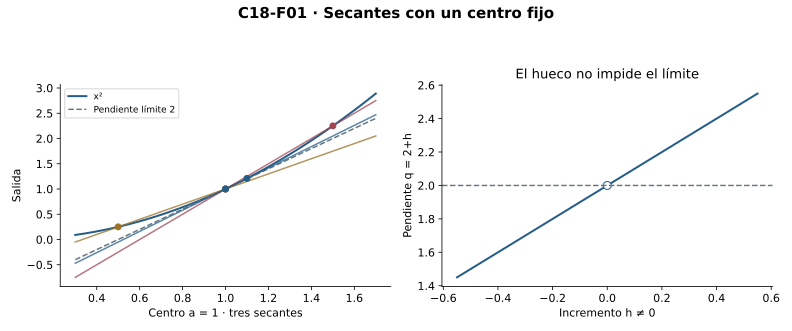
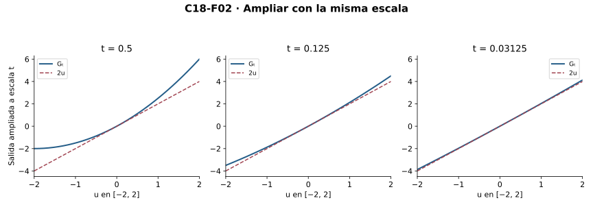
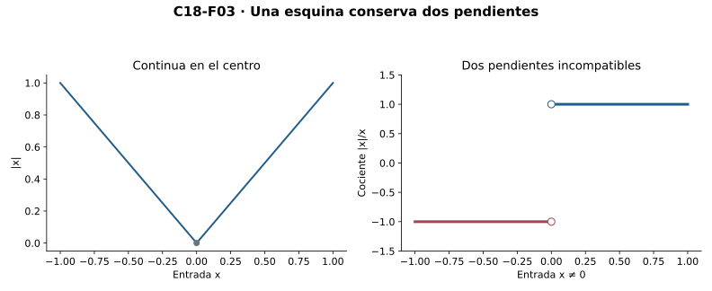
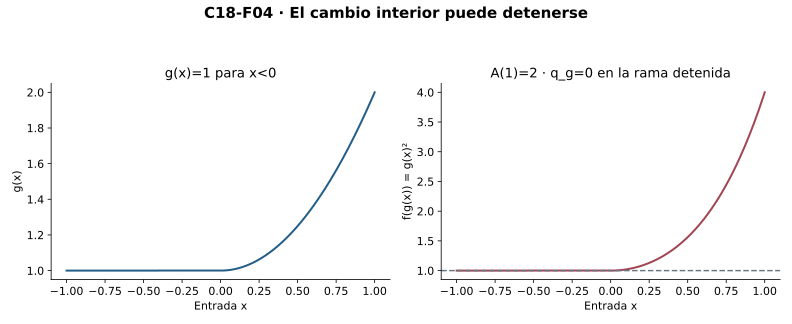
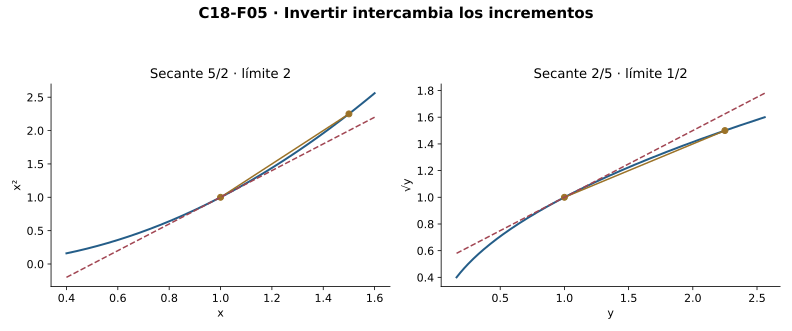
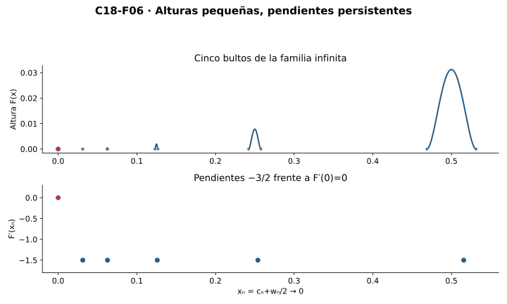
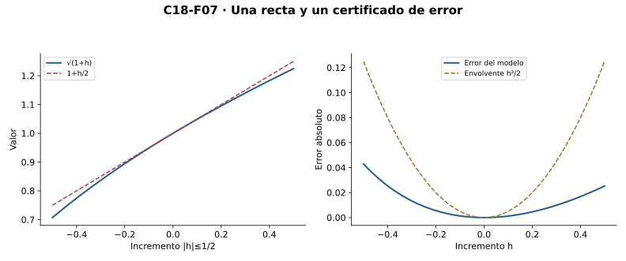

Capítulo 18 — Diferenciabilidad: mirar cada vez más cerca
Índice del libro · Ejercicios de este capítulo
En el cuadrado, las secantes centradas en uno tienen pendiente \(2+h\) cuando el segundo punto está en \(1+h\). Ninguna de ellas tiene pendiente dos, pero todas se aproximan a dos al reducir el incremento. Esa pendiente límite identifica la recta que veremos al ampliar alrededor del punto con la misma escala en ambos ejes. Para precisar esta imagen habrá que comparar el error con el tamaño del incremento: el error absoluto puede tender a cero incluso para una recta de pendiente equivocada.
Los prerrequisitos centrales son límites relativos de C13 y continuidad de C14. Acumulación y densidad C04, rutas dadas C06, raíces C10 y tipos/finitud C12 son interfaces heredadas. C15/C16 sólo se mencionan como garantías adicionales de continuidad de inversas. Todas las reglas se prueban antes de reutilizarlas. No usamos Rolle, valor medio, convexidad, Taylor ni integrales; el zoom se controla por estimaciones explícitas dentro de marcos admisibles.
18.1. Pendientes con un centro fijo
Fijamos un extremo de la secante en \((a,f(a))\) y movemos el otro dentro del dominio. La pendiente divide el cambio de salida por el cambio de entrada, de modo que necesita tanto el valor central \(f(a)\) como otra entrada distinta de \(a\). Además, esas otras entradas deben existir por mucho que nos acerquemos al centro; de lo contrario, ninguna pendiente quedaría determinada por una condición de límite.
R1 — Derivada relativa. Sean \(D\subseteq\mathbb R\), \(f:D\to\mathbb R\) y \(a\in D\cap\operatorname{Acc}(D)\). Definimos una función perforada \[q_{f,a}:D\setminus\{a\}\to\mathbb R,\qquad q_{f,a}(x)=\frac{f(x)-f(a)}{x-a}.\] Decimos que \(f\) es diferenciable o derivable en \(a\), relativamente a \(D\), si existe un real \(L\) tal que \[\forall\eta>0\ \exists\delta>0\ \forall x\in D:\quad 0<|x-a|<\delta\ \Longrightarrow\ |q_{f,a}(x)-L|<\eta.\] La unicidad del límite de C13 hace único a \(L\), que escribimos \(f'(a)\). El dominio de \(q\) no contiene \(a\): la notación \(f'(a)\) designa un límite, nunca una división por cero. El valor \(f(a)\) sí interviene en cada secante.
Si \(a\) fuera aislado, un radio sin otras entradas haría verdadera la condición para cualquier \(L\), y perderíamos la unicidad que permite hablar de la derivada. Por eso una función en \(\{0\}\) no tiene derivada según esta definición. En cambio, cero sí acumula en \([0,\infty)\) y las secantes relativas utilizan todas las entradas positivas suficientemente pequeñas. El dominio decide qué aproximaciones se admiten: esta derivada derecha no afirma por sí sola derivabilidad bilateral en \(\mathbb R\).
Para una afín \(f(x)=mx+b\) en \(\mathbb R\), todos los cocientes \(q_{f,a}\) valen \(m\) y la derivada es \(f'(a)=m\). En el cuadrado, la factorización permite cancelar el incremento únicamente cuando es no nulo: \[q_{f,a}(a+h)=2a+h\qquad(h\ne0).\] El error de pendiente respecto de \(2a\) tiene magnitud \(|h|\), así que el radio \(\delta=\eta\) demuestra \(f'(a)=2a\) en cada centro. En uno, las pendientes \(2+h\) se acercan a dos desde ambos lados. Para \(x^3\) en cero el cociente es \(h^2\) y sirve \(\delta=\sqrt\eta\). En todos estos casos el destino es un real finito; el crecimiento sin cota de las secantes de la raíz en cero no dará una derivada bajo esta convención.

Si \(a\in A\subseteq D\) y \(a\in\operatorname{Acc}(A)\), la restricción conserva el valor central, los cocientes que siguen admitidos y sus radios de control. La derivada relativa a \(D\) conserva entonces su valor respecto de \(A\). La vuelta puede fallar: en \([0,\infty)\), el valor absoluto sólo tiene secantes derechas desde cero, todas de pendiente uno; en la recta también aparecen las izquierdas. Cuando \(A\) coincide con \(D\) dentro de alguna bola \(B(a,\rho)\), se conservan las condiciones en ambos sentidos: los límites sólo usan esas entradas cercanas, y para cualquier radio \(r\) un testigo de acumulación a distancia menor que \(\min(r,\rho)\) pertenece a ambos dominios.
Microcontroles
Microcontrol 1
¿Dónde vive el cociente incremental centrado en \(a\)?
Ver solución del microcontrol 1
En \(D\setminus\{a\}\); \(f(a)\) debe existir, pero \(q_{f,a}(a)\) no está definido.
La diferencia de valores utiliza la evaluación central \(f(a)\), por lo que \(a\) debe ser una entrada. La división utiliza \(x-a\) y sólo se permite cuando \(x\ne a\). Así el centro pertenece al dominio de la función, pero no al del cociente. La derivada estudia un límite de ese nuevo objeto sin evaluarlo en su centro.
Microcontrol 2
¿Por qué se exige \(a\in\operatorname{Acc}(D)\)?
Ver solución del microcontrol 2
Para disponer de entradas distintas del centro en todo radio y garantizar unicidad del límite; en un aislado la condición sería vacía para cualquier pendiente.
La acumulación permite encontrar una entrada perforada en cualquier ventana positiva. Sin ella, elegir una ventana vacía haría válidas todas las pendientes candidatas y no habría un valor único que llamar derivada. El capítulo excluye ese caso mediante una condición sobre el dominio antes de investigar el límite.
Microcontrol 3
¿Qué variables están fijadas antes de elegir el radio de derivabilidad?
Ver solución del microcontrol 3
La función, su dominio, el centro y la tolerancia para el error de pendiente. El radio se fija antes de la entrada variable.
El centro permanece fijo en todas las secantes de esa prueba. El radio puede responder al centro y a la precisión, pero no adaptarse después a cada entrada. Para verificarlo se consideran todas las entradas admisibles con distancia positiva menor que él. Una tabla de algunas secantes no cumple esa obligación universal.
Microcontrol 4
¿Cuál es la derivada de \(x^2\) en \(a\) y qué identidad la prueba?
Ver solución del microcontrol 4
Es \(2a\), porque el cociente en \(a+h\) es \(2a+h\) para \(h\ne0\) y su diferencia respecto de \(2a\) vale \(h\).
La factorización del numerador cancela \(h\) sólo porque se ha excluido \(h=0\). El error de pendiente tiene magnitud \(|h|\) y por ello el radio igual a la tolerancia lo controla directamente. La evaluación central del cuadrado ya está definida. Ninguna secante individual tiene que coincidir con el valor límite para que la prueba funcione.
Microcontrol 5
¿Una pendiente secante muy grande equivale a una derivada real?
Ver solución del microcontrol 5
No. La derivada definida aquí exige un límite finito único de todas las secantes suficientemente cercanas.
El tamaño de una secante concreta no determina el límite del conjunto de secantes próximas. Puede variar según la escala o según el lado de aproximación. Aquí la definición pide un real finito y control de todas las entradas admitidas. Una tendencia sin cota tampoco produce una derivada real finita bajo esta convención.
Microcontrol 6
¿Qué debe conservar una restricción para heredar la derivada?
Ver solución del microcontrol 6
El centro y su acumulación en el dominio restringido; luego los mismos radios controlan sus argumentos perforados.
La restricción conserva el valor central y los cocientes de las entradas que mantiene. Los radios originales siguen controlando esos cocientes. Pero la restricción podría aislar el centro, y entonces faltaría una premisa de la definición. Conservar acumulación asegura que la nueva derivada exista en el sentido adoptado y tenga el mismo valor.
Microcontrol 7
¿Qué derivada relativa tiene \(|x|\) en cero sobre \([0,\infty)\)?
Ver solución del microcontrol 7
Uno: todos los cocientes relativos perforados valen uno. Esto no afirma derivabilidad bilateral sobre toda la recta.
En ese dominio sólo hay entradas positivas distintas del centro y allí \(|x|=x\). El cociente vale exactamente uno y su error respecto de uno es cero. En la recta se añaden entradas negativas con cociente menos uno, que cambian la pregunta de límite. Una conclusión relativa no se transporta al dominio mayor sin revisar esas nuevas entradas.
Microcontrol 8
¿Tiene derivada según R1 una función en un singleton?
Ver solución del microcontrol 8
No en su único punto, porque ese punto no es de acumulación del dominio.
Su única entrada es aislada y no hay secantes admitidas en ninguna escala. La continuidad sí puede verificarse allí porque compara el valor central consigo mismo. La derivada, en cambio, exige acumulación para identificar una pendiente a partir de otras entradas. Son condiciones diferentes sobre el mismo punto.
Ejercicios de la sección 18.1
Ejercicio 1. El centro y el dominio perforado
Escribe la definición relativa de derivada para \(f:D\to\mathbb R\) y explica por qué un centro aislado no sirve. Trata \(D=\{0\}\) y \(D=[0,\infty)\).
Ver solución del ejercicio 1
Se exige \(a\in D\cap\operatorname{Acc}(D)\) y un real \(L\) con \(\forall\eta>0\exists\delta>0\forall x\in D\), \(0<|x-a|<\delta\) implica \(|(f(x)-f(a))/(x-a)-L|<\eta\). El cociente vive en \(D\setminus\{a\}\). En un aislado existe un radio sin entradas perforadas, de modo que cualquier \(L\) cumpliría la condición vacía y se perdería unicidad. En \(\{0\}\) no se define derivada. En \([0,\infty)\), cero es de acumulación y el límite relativo sólo usa entradas positivas; es un concepto de derivada derecha respecto de ese dominio.
La evaluación central y la acumulación son premisas diferentes: la primera permite formar el numerador y la segunda impide que la prueba de límite sea vacía. El radio controla una precisión de pendiente y debe funcionar para todas las entradas perforadas admitidas. En el semieje la aproximación relativa sólo visita un lado, mientras en el singleton no existen secantes que determinen una pendiente.
Ejercicio 2. Secantes del cuadrado
Calcula la pendiente secante de \(x^2\) centrada en \(a\). Prueba la derivada con radio explícito y compara los valores para \(a=1\), \(h=1/2,-1/2,1/10\).
Ver solución del ejercicio 2
Para \(h\ne0\), \([(a+h)^2-a^2]/h=2a+h\). Dada tolerancia \(\eta>0\), \(\delta=\eta\) hace la diferencia respecto de \(2a\) menor que \(\eta\), así \(f\prime(a)=2a\). En uno, las tres pendientes son \(5/2,3/2,21/10\). Ninguna secante concreta se identifica con la derivada sólo por estar cerca; el límite es dos y controla todas las entradas suficientemente próximas.
Retorno visual. Véase C18-F01, después del argumento completo: la figura permite reconocer el mecanismo y no sustituye la prueba.
La cancelación de \(h\) se realiza únicamente en el dominio perforado. El radio explícito prueba un control de todas las secantes, algo que no aportan tres valores particulares. Las secantes de incrementos positivos y negativos se sitúan a ambos lados de dos, pero su error se mide con la misma magnitud \(|h|\). Así se separa el límite de sus aproximaciones concretas.
Ejercicio 3. Dos límites candidatos
Prueba directamente unicidad de la derivada con acumulación, sin usar una sucesión seleccionada.
Ver solución del ejercicio 3
Si \(L,M\) cumplen la definición y \(d=|L-M|>0\), pedimos tolerancia \(d/3\) a ambas condiciones. El mínimo de sus radios es positivo. Acumulación entrega un único testigo perforado dentro de ese mínimo. Para su pendiente \(q\), \(d\le|L-q|+|q-M|<2d/3\), contradicción. Se obtiene existencia de un testigo para el radio fijado, sin una elección simultánea de entradas.
Ambos controles se piden para el mismo centro y la misma tolerancia de pendiente. El mínimo de radios permite aplicarlos a una sola secante. Acumulación justifica un testigo dentro de esa ventana y la triangular produce la contradicción. No hace falta construir simultáneamente testigos a todas las escalas ni una ruta seleccionada.
Ejercicio 4. Una restricción pierde un lado
Prueba la derivada relativa de \(|x|\) en cero sobre \([0,\infty)\) y refuta inferir de ella la derivada sobre \(\mathbb R\).
Ver solución del ejercicio 4
En el dominio positivo perforado, el cociente es \(|x|/x=1\), así cualquier radio sirve para cualquier tolerancia y la derivada relativa es uno. Sobre la recta, el cociente en las entradas negativas es menos uno. Para todo radio hay entradas positivas y negativas con pendientes separadas por dos, incompatibles con acercamiento común a un real. La restricción de una derivada existente la conserva si acumula en el centro, pero una derivada restringida puede omitir entradas que impiden el límite en el dominio mayor.
La derivada relativa sólo exige el límite de las secantes que sobreviven a la restricción. En el semieje todas valen uno. Al ampliar el dominio se agregan secantes negativas de valor menos uno y deja de existir un destino común. La herencia de derivada funciona hacia restricciones acumulantes, pero esta conclusión no se invierte.
Ejercicio 5. Cambiar el valor central
Sea \(F(x)=x^2\) para \(x\ne0\) y \(F(0)=1\). Decide derivabilidad en cero y compara con el cuadrado usual.
Ver solución del ejercicio 5
Para \(x\ne0\), \(q_{F,0}(x)=x-1/x\), que no tiene límite finito en cero. Más directamente, \(F\) no es continua en cero: las entradas \(x_n=1/(n+1)\) tienen salidas tendentes a cero, distintas del valor central uno; R3 refuta derivabilidad. Este uso de R3 es una consecuencia posterior de R1 dentro del capítulo. El cuadrado usual sí tiene valor central cero y derivada cero. Que dos funciones coincidan en el dominio perforado no garantiza iguales cocientes si sus valores centrales difieren.
El valor central aparece en todos los numeradores incrementales y no puede modificarse sin cambiar los cocientes. Las salidas perforadas conservan su límite cero mientras la función asigna uno en el centro. La discontinuidad refuta derivabilidad por la implicación de R3. Coincidir fuera del centro no basta para conservar una derivada centrada allí.
18.2. El error que desaparece al ampliar
Cualquier recta por \((a,f(a))\) coincide con la función en el centro. Si la función es continua allí, la diferencia entre ambas tiende a cero, cualquiera que sea la pendiente elegida. Para identificar una pendiente particular necesitamos que el error desaparezca también después de dividir por la escala de entrada. Esa normalización expresará la aproximación de primer orden.
R2 — Mejor aproximación lineal local. Con los tipos y el centro de R1, sea \[r_L(x)=f(x)-f(a)-L(x-a),\qquad r_L(a)=0.\] Entonces \(f'(a)=L\) si y sólo si \[\forall\eta>0\ \exists\delta>0\ \forall x\in D:\quad 0<|x-a|<\delta\ \Longrightarrow\ |r_L(x)|<\eta|x-a|.\] Estrategia y prueba. Restamos la recta candidata y dividimos únicamente en el dominio perforado. Allí \[\frac{r_L(x)}{x-a}=q_{f,a}(x)-L,\] así la condición es exactamente el límite cero de este cociente. Esta equivalencia prueba existencia en ambos sentidos, sin una fórmula futura de Taylor. La notación \(r_L(x)=o(|x-a|)\) abrevia esta condición relativa; no designa una función nueva ni una cota cuadrática obligatoria.
La unicidad también se ve directamente en los restos. Si sirvieran pendientes \(L,M\) con \(d=|L-M|>0\), pedimos a ambas estimaciones presupuesto \(d/3\) y tomamos el mínimo de sus radios. La acumulación proporciona dentro de él un testigo \(x\in D\) distinto de \(a\). Al restar las identidades, \(r_M(x)-r_L(x)=(L-M)(x-a)\); la triangular y las dos cotas, divididas por \(|x-a|>0\), darían \(d<2d/3\). Basta ese testigo para contradecir las dos pendientes; no se construye una sucesión de entradas.
Para expresar el zoom usamos una escala \(t>0\) en ambos ejes. La coordenada ampliada \(u\) corresponde a la entrada \(a+tu\), por lo que sólo se admiten los \(u\) que satisfacen \(a+tu\in D\). Definimos en esas coordenadas \[G_t(u)=\frac{f(a+tu)-f(a)}t.\] Fijemos un marco \(|u|\le R\), con \(R\ge0\). Para \(u\ne0\) y \(0<t<\delta/(R+1)\) se tiene \(0<|tu|<\delta\), y la estimación del resto da \(|G_t(u)-Lu|<\eta|u|\le\eta R\). En \(u=0\) el error es cero. Dado \(\varepsilon>0\), elegimos primero \(\eta=\varepsilon/(R+1)\), obtenemos su radio \(\delta\) y reducimos \(t\) como se indicó. Así todos los puntos admisibles del marco quedan a error menor que \(\varepsilon\); para \(R=0\) sólo está el centro, con error cero. Si \(D\) contiene una vecindad de \(a\), todo el marco es admisible cuando \(t\) es suficientemente pequeño. En un dominio con huecos conservamos las coordenadas permitidas, sin extender la función para llenar el dibujo. La estimación común se demuestra aquí directamente, sin una teoría de sucesiones de funciones.

En el cuadrado, el resto exacto es \(r_{2a}(a+h)=h^2\) y el zoom toma la forma \(G_t(u)=2au+tu^2\). En un marco acotado el término \(tu^2\) se hace pequeño con una sola escala \(t\). Si proponemos otra pendiente \(M\), el resto \((2a-M)h+h^2\) todavía tiende a cero en valor absoluto; al dividirlo por \(h\) queda \(2a-M+h\), cuyo límite sólo es cero para \(M=2a\). El carácter de mejor aproximación lineal se refiere a ese error menor que el orden de \(|h|\) al acercarse al centro. No afirma una minimización del error en cada punto a distancia finita.
Microcontroles
Microcontrol 9
¿Qué error identifica la pendiente correcta?
Ver solución del microcontrol 9
El resto dividido por el incremento, que debe tender a cero; equivalentemente, \(|r_L(x)|<\eta|x-a|\) para toda tolerancia en algún radio.
La identidad \(r_L(x)/(x-a)=q_{f,a}(x)-L\) convierte error normalizado en error de pendiente. Multiplicar las magnitudes por \(|x-a|>0\) da la versión con presupuestos lineales. La equivalencia sólo se formula en entradas perforadas. En el centro el resto vale cero, pero la razón no se define.
Microcontrol 10
¿Por qué error absoluto tendente a cero no identifica \(L\)?
Ver solución del microcontrol 10
Para una función continua, restar cualquier recta por el centro sigue dando error tendente a cero. La normalización por \(x-a\) distingue las pendientes.
Todas las rectas que pasan por el punto central tienen el mismo valor allí. Si la función es continua, su diferencia con cualquiera de ellas tiende a cero en magnitud absoluta. Dividir por el incremento pregunta algo más preciso: si el error desaparece en comparación con la distancia de entrada. Esa condición distingue el modelo de primer orden.
Microcontrol 11
¿Cuánto vale el resto del cuadrado con pendiente \(2a\)?
Ver solución del microcontrol 11
\(r_{2a}(a+h)=h^2\), por expansión exacta.
La expansión da \((a+h)^2=a^2+2ah+h^2\). Los dos primeros términos son exactamente el modelo afín con pendiente \(2a\) y el tercero es el resto. Al normalizar por \(h\ne0\) queda \(h\), que tiende a cero. Este ejemplo tiene un resto cuadrático demostrado, aunque no toda función derivable deba tenerlo.
Microcontrol 12
¿Qué papel cumple la acumulación en la unicidad del modelo?
Ver solución del microcontrol 12
Proporciona una entrada perforada dentro del mínimo de dos radios; al dividir allí, dos pendientes distintas contradicen ambos presupuestos de error.
Si dos pendientes distaran \(d>0\), sus presupuestos de resto se pedirían con una fracción de \(d\). Una entrada perforada dentro de ambos radios permite restar las identidades y dividir por su distancia positiva. La suma de los errores sería menor que la distancia entre las pendientes. La acumulación justifica esa entrada concreta, sin seleccionar una ruta.
Microcontrol 13
¿Qué entradas admite \(G_t(u)\)?
Ver solución del microcontrol 13
Sólo las que cumplen \(a+tu\in D\); si el dominio está roto no puede suponerse que todo un marco de \(u\) sea admisible.
El zoom transforma una coordenada \(u\) en la entrada original \(a+tu\). Su evaluación sólo existe si esa entrada pertenece a \(D\), y se usa una escala \(t\ne0\) para dividir. En un dominio con huecos, el conjunto admisible de coordenadas puede depender de \(t\). Dibujar un marco completo no autoriza llenar esos huecos.
Microcontrol 14
¿Por qué se limita el marco de zoom a \(|u|\le R\)?
Ver solución del microcontrol 14
La cota \(\eta|u|\) se convierte en una cota común \(\eta R\). Sin limitar \(u\), ese presupuesto no protege toda la recta.
La estimación de derivabilidad se multiplica por la magnitud de la coordenada ampliada. Un marco acotado permite sustituirla por una barrera común y diseñar una escala válida para todas sus entradas admitidas. Si \(R=0\), sólo hay la coordenada central y su error es cero. Sin una barrera del marco, la misma estimación no produce control uniforme sobre todas las coordenadas.
Microcontrol 15
¿Qué significa \(o(|x-a|)\) en este capítulo?
Ver solución del microcontrol 15
Una abreviatura del límite cero del error normalizado sobre el dominio perforado, sin imponer una tasa cuadrática.
El símbolo resume una obligación de tolerancias: el cociente de magnitudes del resto por \(|x-a|\) puede hacerse menor que cualquier positivo. No añade una constante \(B\) con resto menor que \(B|x-a|^2\). Las dos tasas son distintas y el ejemplo \(|x|\sqrt{|x|}\) las separa. La notación conserva el dominio relativo de aproximación.
Microcontrol 16
¿La recta de R2 minimiza necesariamente todo error a distancia finita?
Ver solución del microcontrol 16
No. Su propiedad es el error de orden menor que \(|x-a|\) al acercarse al centro.
La propiedad se refiere a cómo cambia el error al reducir la distancia al centro. No compara todas las rectas mediante un criterio de ajuste en un intervalo fijo. Una recta distinta podría aproximar mejor alguna entrada lejana sin ser el modelo de primer orden. La unicidad demostrada corresponde al error normalizado tendente a cero.
Ejercicios de la sección 18.2
Ejercicio 6. Traducir el error
Prueba equivalencia entre derivada \(L\) y resto \(r_L=o(|x-a|)\) sobre el dominio relativo.
Ver solución del ejercicio 6
Para \(x\ne a\), \(r_L(x)/(x-a)=q_{f,a}(x)-L\). Por tanto la condición de límite cero de ese cociente equivale término a término a la definición de derivada. En magnitudes, multiplicar o dividir por el positivo \(|x-a|\) traduce \(|q-L|<\eta\) en \(|r_L|<\eta|x-a|\). En el centro \(r_L(a)=0\), sin atribuir allí un cociente. Ambos sentidos conservan el mismo radio y dominio perforado.
El resto se define restando el valor central y el término lineal propuesto. La identidad de razones muestra que las dos condiciones son equivalentes para cada entrada perforada, sin cambiar los cuantificadores ni radios. El uso de magnitudes conserva el control también para incrementos negativos. En el centro se comprueba el resto cero por evaluación directa y no por una división.
Ejercicio 7. Un marco completo de zoom
Para \(f(x)=x^2\), centro uno y \(|u|\le2\), escribe \(G_t\) y da una condición en \(t>0\) para error menor que \(\varepsilon\) respecto de la recta límite.
Ver solución del ejercicio 7
\(G_t(u)=[(1+tu)^2-1]/t=2u+tu^2\). En el marco \(|u|\le2\), el error es \(tu^2\le4t\). Si \(0<t<\varepsilon/4\), es menor que \(\varepsilon\) para todos los puntos del marco simultáneamente. El dominio es toda la recta, así todos son admisibles. El marco acotado permite una cota común; sin acotarlo el término \(tu^2\) no queda pequeño para todo \(u\) con un mismo \(t>0\).
Retorno visual. Véase C18-F02, después del argumento completo: la figura permite reconocer el mecanismo y no sustituye la prueba.
La ampliación divide la variación vertical por la misma escala que cambia las coordenadas horizontales. El término lineal queda \(2u\) y el resto ampliado queda \(tu^2\). La cota de marco convierte este último en un error común \(4t\). Su dependencia del marco explica por qué la aproximación se afirma en regiones acotadas de coordenadas ampliadas.
Ejercicio 8. Todas las rectas tienen error absoluto pequeño
Para el cuadrado centrado en \(a\), demuestra que cualquier recta de pendiente \(M\) por el punto tiene error absoluto tendente a cero. Explica por qué sólo \(M=2a\) es modelo de primer orden.
Ver solución del ejercicio 8
El resto es \((2a-M)h+h^2\), cuya magnitud no supera \((|2a-M|+|h|)|h|\) y tiende a cero cuando \(h\to0\). Pero su cociente por \(h\) es \(2a-M+h\), con límite \(2a-M\). Este límite sólo vale cero si \(M=2a\). El error absoluto no distingue pendientes porque todas las rectas pasan por el mismo punto y son continuas allí; el error normalizado sí las distingue.
El término proporcional a \(h\) tiende a cero incluso cuando su coeficiente es no nulo. Por eso cualquier pendiente propuesta produce error absoluto pequeño. Al dividir por \(h\), ese coeficiente permanece y sólo desaparece para la pendiente correcta. El modelo de primer orden exige esa segunda comprobación, que es más fuerte que continuidad del error.
Ejercicio 9. No hace falta escoger rutas
Prueba unicidad del modelo lineal usando únicamente estimaciones de resto y un testigo de acumulación.
Ver solución del ejercicio 9
Si sirven \(L,M\) distintos, sea \(d=|L-M|>0\). Las estimaciones con presupuesto \(d/3\) entregan dos radios. Acumulación permite un punto distinto del centro en el menor de ellos. Como \((L-M)(x-a)=r_M(x)-r_L(x)\), la triangular y ambas cotas dan \(d|x-a|<2d|x-a|/3\). Dividir por \(|x-a|>0\) contradice \(d>0\). No se construye una sucesión ni se elige un testigo para cada radio a la vez.
Las dos identidades de resto contienen los mismos valores de función y por ello éstos se cancelan al restarlas. Queda una comparación entre diferencia de pendientes y suma de errores. La entrada de acumulación tiene distancia positiva y permite dividir sin pérdida de información. Un único testigo bajo los dos radios basta para probar unicidad.
Ejercicio 10. Zoom sobre un dominio roto
Sea \(D=\{0\}\cup\{1/(n+1):n\in\mathbb N\}\) y \(f(x)=x^2\) en \(D\). Prueba derivada relativa en cero y describe las entradas permitidas del zoom.
Ver solución del ejercicio 10
Cero acumula en \(D\) por las entradas explícitas \(1/(n+1)\). Para \(x\in D\setminus\{0\}\), \(q=x\), por lo que \(\delta=\eta\) prueba derivada cero. Para \(t>0\), las entradas del zoom son \(u=0\) y \(u=1/[t(n+1)]\). Allí \(G_t(u)=tu^2\). En \(|u|\le R\) el error no supera \(tR^2\), pero no se ha definido \(G_t\) en los otros puntos del marco. La estimación es común a las entradas admisibles y no rellena los huecos del dominio.
La sucesión explícita acredita acumulación del dominio en cero, pero los radios de derivada controlan todas sus entradas, no sólo una cola elegida. En el zoom, resolver \(tu\in D\) determina exactamente las coordenadas permitidas. La cota por \(tR^2\) es válida en todo el marco admisible. No implica que la función ampliada esté definida en los huecos entre esas coordenadas.
18.3. Continuidad, esquinas y alcance del control
Una derivada finita mantiene acotadas las pendientes próximas al centro. Al multiplicar esa barrera por la distancia de entrada, el cambio de valores tendrá que hacerse pequeño. Este paso proporcionará la continuidad necesaria para justificar después los factores variables en las reglas de derivación.
R3 — Diferenciabilidad implica continuidad. Sean \(L=f'(a)\) y \(C=|L|+1>0\). La tolerancia uno en R1 entrega un radio \(r\) para el que \(|q_{f,a}(x)|<C\) en la bola perforada. Por tanto \[|f(x)-f(a)|<C|x-a|\qquad(0<|x-a|<r,\ x\in D).\] Para \(\varepsilon>0\), \(\delta=\min(r,\varepsilon/C)\) controla el error de salida por \(\varepsilon\) si \(x\ne a\); si \(x=a\), el error vale cero. Ésta es la continuidad de C14 sobre el mismo dominio. También queda la cota no estricta \(|f(x)-f(a)|\le C|x-a|\) incluyendo el centro.
La estimación compara cada \(f(x)\) con el mismo \(f(a)\); no ofrece automáticamente una cota de \(|f(x)-f(y)|\) por \(C|x-y|\) para todos los pares de una vecindad. Podemos ver la diferencia en \(F:\mathbb R\to\mathbb R\), definida por \(F(x)=x^2\) en los racionales y \(F(x)=0\) en los irracionales. En cero, \(F(0)=0\) y \(|q_{F,0}(x)|\le|x|\), lo que prueba \(F'(0)=0\). Sin embargo, \(F\) es discontinua en cada \(b\ne0\). Si \(b\) es racional, la densidad proporciona irracionales arbitrariamente próximos con salida cero, separada de \(b^2\); si \(b\) es irracional, proporciona racionales próximos con \(|x-b|<|b|/2\), de modo que \(x^2>b^2/4\) mientras \(F(b)=0\). Un control Lipschitz de todos los pares en alguna vecindad de cero implicaría continuidad en sus puntos interiores, contradiciendo este ejemplo. La derivabilidad en un centro tampoco garantiza derivabilidad en sus vecinos.
El valor absoluto muestra que la continuidad obtenida en R3 no basta para volver a la derivada. La triangular inversa da \(||x|-|y||\le|x-y|\), de donde su continuidad en toda la recta. Sus cocientes en cero, en cambio, valen uno a la derecha y menos uno a la izquierda. Si existiera una derivada \(L\), la tolerancia \(1/2\) proporcionaría un radio \(\delta\); las entradas \(\delta/2\) y \(-\delta/2\) exigirían simultáneamente \(|1-L|<1/2\) y \(|-1-L|<1/2\). La triangular daría entonces \(2\le|1-L|+|L+1|<1\), una contradicción para cualquier candidato.

Tampoco una pendiente nula decide por sí sola la constancia o los extremos: \(x^3\) tiene derivada cero en cero y toma valores positivos y negativos arbitrariamente cerca. Su modelo lineal es horizontal, pero la función sigue variando. Cuando \(L=f'(a)>0\), pedir tolerancia \(L/2\) sí mantiene positivos los cocientes próximos. La identidad \(f(x)-f(a)=q_{f,a}(x)(x-a)\) da entonces salidas mayores que \(f(a)\) para entradas a la derecha y menores para entradas a la izquierda, siempre que existan en el dominio. Estas comparaciones tienen centro fijo \(a\); todavía no comparan entre sí todos los pares de una vecindad ni prueban monotonía en ella.
Microcontroles
Microcontrol 17
¿Qué tolerancia inicial produce una cota de pendientes?
Ver solución del microcontrol 17
La tolerancia uno respecto de \(L\); resulta \(|q|<|L|+1\) cerca del centro.
El límite finito de pendientes implica que dentro de alguna ventana su distancia a \(L\) es menor que uno. La triangular da entonces \(|q|<|L|+1\), una constante estrictamente positiva. Multiplicar por la distancia de entrada controla el error de valores. La barrera se obtiene del límite antes de elegir la precisión de continuidad.
Microcontrol 18
¿Cómo se trata el argumento \(x=a\) al demostrar continuidad?
Ver solución del microcontrol 18
Se comprueba aparte: el error de salida es cero. No se evalúa allí el cociente perforado.
La continuidad incluye la entrada central y allí la diferencia \(f(a)-f(a)\) vale cero. Para entradas distintas se usa la cota de secantes y se multiplica por \(|x-a|\). Separar estos dos casos verifica toda la bola relativa. Así se evita introducir una evaluación de \(q\) que no pertenece a su dominio.
Microcontrol 19
¿Qué radio transforma la cota \(C|x-a|\) en error menor que \(\varepsilon\)?
Ver solución del microcontrol 19
\(\min(r,\varepsilon/C)\) con \(C>0\), usando el radio \(r\) donde la cota está probada.
El primer radio conserva la región donde la estimación es válida; el segundo convierte distancia en precisión de salida. Su mínimo positivo cumple ambas condiciones a la vez. La distancia de entrada estricta da error final estricto, incluso si la cota inicial es no estricta. La positividad de \(C\) legitima la división.
Microcontrol 20
¿Por qué falla la derivada bilateral de \(|x|\) en cero?
Ver solución del microcontrol 20
Las pendientes de las entradas positivas y negativas son uno y menos uno; no pueden acercarse al mismo real con error menor que \(1/2\).
Dentro de cualquier radio positivo se pueden tomar entradas de signos opuestos. Sus pendientes difieren en dos y, si ambas estuvieran a distancia menor que medio de un candidato, la triangular las separaría menos que uno. Esa contradicción descarta cualquier candidato real. La refutación utiliza secantes válidas, no sólo la forma visible de la esquina.
Microcontrol 21
¿Pendiente nula en un punto implica constancia cerca?
Ver solución del microcontrol 21
No. \(x^3\) tiene derivada cero en cero y cambia de valor y de signo arbitrariamente cerca.
El cociente centrado de \(x^3\) es \(x^2\) y tiende a cero. Sin embargo, entradas positivas y negativas tienen salidas de signos opuestos respecto del valor central. Por eso tampoco hay máximo ni mínimo local en cero. Una pendiente nula sólo identifica el término lineal del modelo y no decide el comportamiento restante.
Microcontrol 22
¿Qué centro queda fijo en la cota de R3?
Ver solución del microcontrol 22
\(a\). El resultado compara \(f(x)\) con \(f(a)\), sin controlar todos los pares \(x,y\) próximos.
La estimación tiene forma \(|f(x)-f(a)|\le C|x-a|\) con una evaluación central fija. Una condición Lipschitz vecina pediría una cota para \(|f(x)-f(y)|\) de cualquier par en la región. Ese nuevo centro \(y\) no está controlado por la primera afirmación. El ejemplo racional/irracional muestra que la diferencia de alcance es efectiva.
Microcontrol 23
¿Qué derivada tiene en cero la función racional/irracional de R3?
Ver solución del microcontrol 23
Cero, pues su cociente tiene magnitud a lo sumo \(|x|\) aunque sea discontinua en todos los otros puntos.
En el centro cero la función vale cero y satisface \(|F(x)|\le x^2\) para todas las entradas. Por ello su cociente tiene error a lo sumo \(|x|\) respecto de cero. La densidad de ambas clases de entradas provoca discontinuidad en cada centro no nulo. La derivabilidad puntual no convierte ese control centrado en regularidad de todo el entorno.
Microcontrol 24
¿Qué comparación local permite \(f\prime(a)>0\)?
Ver solución del microcontrol 24
Cerca del centro, las entradas mayores que \(a\) tienen salida mayor que \(f(a)\) y las menores tienen salida menor. No es aún monotonía entre todos los pares.
La tolerancia \(f\prime(a)/2\) mantiene positivas las secantes suficientemente cercanas. El signo del incremento \(x-a\) decide entonces el de la diferencia \(f(x)-f(a)\). Esto compara cada entrada con el mismo centro. No se han controlado secantes centradas en otros puntos y por ello no se deduce crecimiento de toda una vecindad.
Ejercicios de la sección 18.3
Ejercicio 11. De pendientes a valores
Reconstruye la prueba de continuidad desde una derivada finita, incluidos los presupuestos y el centro.
Ver solución del ejercicio 11
La tolerancia uno de derivabilidad da \(r>0\) con \(|q-L|<1\) en el radio perforado, así \(|q|<C=|L|+1>0\). Multiplicar por \(|x-a|\) da error de valores menor que \(C|x-a|\). Para \(\varepsilon>0\), \(\delta=\min(r,\varepsilon/C)\) sirve para todo argumento distinto del centro de distancia menor. En el centro el error es cero. Esta última comprobación convierte un control perforado en continuidad sobre una bola no perforada del mismo dominio.
Primero se obtiene una barrera finita de pendientes usando tolerancia uno, sin depender del desafío posterior de valores. Después se reduce la distancia de entrada según esa barrera. El centro, excluido de los cocientes, se incorpora por su error de valor cero. La prueba concluye continuidad relativa en todo el dominio de aproximación sin evaluar la secante en el centro.
Ejercicio 12. La esquina refuta todos los radios
Prueba continuidad de \(|x|\) en toda la recta y no derivabilidad en cero con dos testigos para un radio arbitrario.
Ver solución del ejercicio 12
La triangular inversa da \(||x|-|a||\le|x-a|\), de modo que \(\delta=\varepsilon\) prueba continuidad en cada \(a\). Si existiera derivada \(L\) en cero, tolerancia \(1/2\) daría un radio \(\delta\). En \(\delta/2\) y \(-\delta/2\) los cocientes valen uno y menos uno, respectivamente, y ambos tendrían error menor que \(1/2\) respecto de \(L\). Entonces \(2\le|1-L|+|L+1|<1\), contradicción. La prueba no se apoya en la apariencia del gráfico.
Retorno visual. Véase C18-F03, después del argumento completo: la figura permite reconocer el mecanismo y no sustituye la prueba.
La continuidad usa una desigualdad de valores válida para cualquier par, incluidos los centros. La no derivabilidad usa una precisión fija de pendientes y dos entradas perforadas dentro del radio que ofrecería el candidato. Sus cocientes incompatibles contradicen la triangular. Así continuidad y falta de derivada quedan demostradas con controles distintos y completos.
Ejercicio 13. Pendiente cero sin extremo
Prueba que \(x^3\) tiene derivada cero en cero y que allí no es constante ni tiene máximo o mínimo local.
Ver solución del ejercicio 13
Para \(h\ne0\), el cociente vale \(h^2\); \(\delta=\sqrt\eta\) da error menor que \(\eta\) y prueba derivada cero. Todo radio admite \(h=\delta/2>0\) y \(-h<0\), con valores \(h^3>0\) y \(-h^3<0\) respecto del valor central cero. Así ninguna vecindad relativa tiene todos sus valores por encima o por debajo del central, y tampoco son constantes. La recta horizontal local no contiene información suficiente para decidir extremos.
La precisión de pendiente se convierte en radio mediante la raíz positiva de \(\eta\). Las entradas de signos opuestos dentro de cualquier ventana producen valores a ambos lados de cero. Por eso no hay constancia ni extremo local, aunque el término lineal del modelo sea horizontal. No se utiliza una regla sobre extremos que aún no haya sido demostrada.
Ejercicio 14. Control centrado sin Lipschitz vecino
Analiza \(F(x)=x^2\) en racionales y cero en irracionales. Prueba \(F\prime(0)=0\) y que no es Lipschitz en ninguna vecindad de cero.
Ver solución del ejercicio 14
Como \(F(0)=0\) y \(|F(x)|\le x^2\), \(|q_{F,0}(x)|\le|x|\) prueba derivada cero con \(\delta=\eta\). En cada \(b\ne0\) es discontinua: si es racional, irracionales arbitrariamente próximos tienen salida cero en lugar de \(b^2\); si es irracional, racionales con \(|x-b|<|b|/2\) tienen salida mayor que \(b^2/4\) en lugar de cero. La densidad garantiza tales testigos en cualquier radio. Una cota Lipschitz para todos los pares de alguna bola de cero implicaría continuidad en cada punto interior de esa bola, por radio \(\varepsilon/L\) si \(L>0\), o constancia si \(L=0\). Elegir allí un \(b\ne0\) produce contradicción. La cota centrada de R3 sigue siendo válida y no equivale a esa cota de pares.
La barrera \(|F(x)|\le x^2\) funciona para entradas racionales e irracionales y prueba el límite de secantes en cero. Fuera de cero la densidad entrega entradas de la clase opuesta con salida separada del valor central. Si hubiese una cota Lipschitz en una bola de cero, acreditaría continuidad en un punto no nulo interior de esa bola. Esa contradicción distingue control centrado de control de todos los pares vecinos.
Ejercicio 15. Comparar sólo con el centro
Si \(f\prime(a)=L>0\), prueba las comparaciones locales con \(f(a)\) a cada lado del centro. Indica el alcance exacto.
Ver solución del ejercicio 15
Con tolerancia \(L/2\), la definición entrega un radio donde \(q>L/2>0\) para argumentos perforados. La identidad \(f(x)-f(a)=q(x)(x-a)\) da diferencia positiva para \(x>a\) y negativa para \(x<a\), dentro de ese radio y del dominio. No se exige que ambos lados tengan entradas; sólo se afirma la implicación cuando las hay. El centro está fijo: no se han comparado salidas de dos entradas arbitrarias diferentes de \(a\), por lo que no se ha probado monotonía en toda una vecindad.
La positividad de las secantes se obtiene de un límite positivo con un presupuesto que conserva la mitad de su valor. Multiplicar por el incremento cambia el signo según el lado, sin exigir que ambos lados existan en el dominio. La conclusión compara sólo con \(f(a)\). Para monotonía entre otros pares haría falta un argumento adicional que controle centros variables.
18.4. Operaciones sobre incrementos
Las identidades de incrementos permiten pasar de las derivadas de dos funciones a las de sus operaciones. Cada identidad debe escribirse en un dominio donde existan todas sus evaluaciones, y el paso al límite debe justificar tanto los cocientes como los valores variables que aparezcan al separarla.
R4 — Suma y producto. Sean \(f,g:D\to\mathbb R\) derivables en \(a\in D\cap\operatorname{Acc}(D)\), con derivadas \(L,M\). Para constantes \(\alpha,\beta\), la identidad \(q_{\alpha f+\beta g,a}=\alpha q_{f,a}+\beta q_{g,a}\) y el álgebra de límites C13 dan \[ (\alpha f+\beta g)'(a)=\alpha L+\beta M.\] Para el producto, sumar y restar \(f(a)g(x)\) produce \[q_{fg,a}(x)=f(x)q_{g,a}(x)+g(a)q_{f,a}(x).\] R3 asegura \(f(x)\to f(a)\); C13 permite multiplicar los límites finitos. Así \((fg)'(a)=f(a)M+g(a)L\). La continuidad se usa exactamente para el factor no centrado. Todos los cocientes viven en \(D\setminus\{a\}\); no se ha aplicado la cadena.
Al sumar y restar \(f(a)g(x)\), el primer paso da \(q_{fg,a}(x)=g(x)q_{f,a}(x)+f(a)q_{g,a}(x)\). Esta expresión coincide con la exhibida porque \((f(x)-f(a))q_{g,a}(x)=(g(x)-g(a))q_{f,a}(x)=(x-a)q_{f,a}(x)q_{g,a}(x)\). También podemos llegar directamente a la forma exhibida sumando y restando \(f(x)g(a)\). Las dos descomposiciones son válidas; la forma elegida deja \(f(x)\) como factor variable y utiliza su continuidad.
Para invertir \(g\) necesitamos que el valor central no sea cero. Si \(g(a)\ne0\), R3 y continuidad con tolerancia \(|g(a)|/2\) proporcionan \(\rho>0\) tal que \(|g(x)|>|g(a)|/2\) en \(D\cap B(a,\rho)\). Por tanto, el dominio efectivo \(E=\{x\in D:g(x)\ne0\}\) contiene una vecindad relativa completa de \(a\). Sigue acumulando allí: para cualquier radio tomamos su mínimo con \(\rho\) y usamos un testigo perforado de \(D\) dentro de él. Las derivadas restringidas conservan sus valores por R1. En \(E\setminus\{a\}\), la diferencia de recíprocos da \[q_{1/g,a}(x)=-\frac{q_{g,a}(x)}{g(x)g(a)}.\] El denominador tiende al real no nulo \(g(a)^2\), protegido además por el margen local anterior. C13 permite tomar el límite y la regla de producto, aplicada a \(f|_E\) y \(1/g\), da después el cociente: \[ (1/g)'(a)=-\frac{M}{g(a)^2},\qquad (f/g)'(a)=\frac{L g(a)-f(a)M}{g(a)^2}.\] Ambas funciones están tipadas sobre \(E\); sus derivadas son relativas a ese dominio, aunque los datos de \(f\) y \(g\) se hayan calculado inicialmente sobre \(D\).
A partir de la identidad, las constantes y el producto obtenemos por inducción \((x^n)'(a)=na^{n-1}\) para enteros \(n\ge1\). El paso inductivo deriva \(x^n x\) y produce \(na^{n-1}a+a^n=(n+1)a^n\), también en cero, sin exponentes negativos. La potencia cero se trata como la constante uno y tiene derivada cero; así evitamos la expresión indefinida \(0a^{-1}\) en el origen. Para \(n\ge1\), el recíproco permite después \((x^{-n})'(a)=-na^{-n-1}\) en \(\mathbb R\setminus\{0\}\). Las sumas finitas dan polinomios y los cocientes dan funciones racionales en sus dominios efectivos. Estas pruebas no incorporan una regla para exponentes reales todavía no construidos.
Cancelar una expresión conserva las entradas sobre las que la igualdad es válida. La función \(x/x\) en \(\mathbb R\setminus\{0\}\) vale uno y tiene derivada cero en cada punto de ese dominio; en cero no dispone de valor ni de derivada. La constante uno sobre toda la recta es una extensión distinta. Del mismo modo, si numerador y denominador se anulan en el centro, la fórmula del cociente no es aplicable allí: hace falta definir y estudiar expresamente una extensión, si existe.
Microcontroles
Microcontrol 25
¿Qué factor requiere continuidad en la prueba del producto?
Ver solución del microcontrol 25
El factor \(f(x)\) en \(f(x)q_g(x)+g(a)q_f(x)\); R3 da su límite \(f(a)\).
La identidad del producto mezcla cocientes centrados con un valor variable de la función. Los límites de los cocientes no bastan para ese factor. Derivabilidad de \(f\) implica continuidad y proporciona \(f(x)\to f(a)\). Sólo después se aplica la regla de producto de límites y se obtiene la fórmula solicitada.
Microcontrol 26
¿Qué dominio comparte la regla de suma?
Ver solución del microcontrol 26
Un mismo dominio \(D\) para ambos sumandos, con \(a\in D\cap\operatorname{Acc}(D)\) y ambas derivadas existentes allí.
Para sumar los cocientes se necesitan ambas evaluaciones en cada entrada considerada y el mismo denominador \(x-a\). Si los dominios fueran distintos, habría que restringirlos a su intersección y comprobar acumulación allí. La mera acumulación de cada dominio separado no garantiza esa premisa común. El dominio declarado evita esa omisión.
Microcontrol 27
¿Qué margen da \(g(a)\ne0\) junto con continuidad?
Ver solución del microcontrol 27
En una vecindad relativa, \(|g(x)|>|g(a)|/2>0\), por lo que el recíproco está definido cerca.
La triangular inversa da \(|g(x)|\ge|g(a)|-|g(x)-g(a)|\). Pedir a continuidad error menor que la mitad de \(|g(a)|\) entrega la separación requerida. Ese margen asegura definición del recíproco y control del denominador de su secante. La hipótesis \(g(a)\ne0\) también protege la propia evaluación central.
Microcontrol 28
¿Cuál es el dominio efectivo de \(f/g\)?
Ver solución del microcontrol 28
\(E=\{x\in D:g(x)\ne0\}\), con numerador restringido expresamente a ese dominio.
El cociente sólo tiene valor donde su denominador no se anula. Tanto el numerador como el denominador se consideran allí restringidos y conservan sus evaluaciones originales. En un centro con \(g(a)\ne0\), el margen local protege una ventana completa relativa. No se asigna derivada del cociente en los ceros excluidos de su dominio.
Microcontrol 29
¿Por qué ese dominio efectivo acumula en \(a\)?
Ver solución del microcontrol 29
Contiene toda una vecindad relativa de \(a\) en \(D\) y \(a\) ya era de acumulación en \(D\).
Para cualquier ventana deseada se toma el mínimo de su radio y el radio donde el denominador está protegido. La acumulación de \(D\) proporciona dentro una entrada distinta de \(a\). Esa entrada pertenece también a \(E\) porque allí \(g\) no se anula. Así se acredita acumulación del dominio efectivo con un testigo para cada ventana.
Microcontrol 30
¿Qué signo aparece en la derivada de \(1/g\)?
Ver solución del microcontrol 30
El negativo: \(-(g\prime(a))/g(a)^2\), procedente de la diferencia de recíprocos.
Al restar recíprocos, el numerador es \(g(a)-g(x)\) y por ello introduce el signo menos respecto del cociente de \(g\). El denominador es \(g(x)g(a)\) y tiende a \(g(a)^2>0\). La protección local permite aplicar la regla de límite del cociente. El signo proviene de una identidad, no de una regla memorizada sin dominio.
Microcontrol 31
¿Cómo se trata la potencia cero en el origen?
Ver solución del microcontrol 31
Como la constante uno, con derivada cero; no se escribe una fórmula que contenga \(0a^{-1}\) en \(a=0\).
La función potencia cero se define como uno también en el origen en esta convención. Su numerador incremental es cero y su derivada vale cero. La fórmula para potencias positivas se demuestra con exponentes no negativos. Escribir formalmente \(0a^{-1}\) en el origen introduciría una expresión indefinida que no representa esa constante.
Microcontrol 32
¿Cancelar \(x/x\) añade cero al dominio original?
Ver solución del microcontrol 32
No. Vale uno y deriva a cero sólo en \(\mathbb R\setminus\{0\}\). Incluir cero requiere una extensión distinta.
La cancelación es una igualdad válida sólo cuando el divisor no es cero. Allí la función original es constante y sus secantes valen cero. En cero no dispone de evaluación, que es una premisa de derivabilidad. Añadir un valor en el hueco define otro objeto cuyo comportamiento debe comprobarse como extensión.
Ejercicios de la sección 18.4
Ejercicio 16. El producto como identidad
Deriva suma y producto desde las identidades de cocientes, e indica dónde se usa continuidad.
Ver solución del ejercicio 16
En el dominio perforado común, \(q_{\alpha f+\beta g}=\alpha q_f+\beta q_g\); límites finitos dan \(\alpha f\prime(a)+\beta g\prime(a)\). Para producto, sumar y restar \(f(a)g(x)\) da \(q_{fg}=f(x)q_g+g(a)q_f\). La diferenciabilidad de \(f\) da continuidad por R3, así el primer factor tiende a \(f(a)\); los demás límites son los de los cocientes o la constante. El resultado es \(f(a)g\prime(a)+g(a)f\prime(a)\). Sin ese paso no se habría justificado el límite del factor \(f(x)\).
Cada identidad se verifica antes de pasar al límite y utiliza el mismo dominio perforado. En el producto aparece un valor variable, que necesita el límite proporcionado por continuidad desde derivabilidad. Las demás piezas son constantes o secantes con límite ya supuesto. Esa identificación de factores explica por qué la fórmula no es sólo manipulación formal de símbolos.
Ejercicio 17. Dominio del recíproco
Prueba la regla del recíproco y justifica acumulación de su dominio efectivo.
Ver solución del ejercicio 17
Si \(g(a)\ne0\), continuidad da una vecindad relativa donde \(|g(x)|>|g(a)|/2\). Por tanto \(E=\{g\ne0\}\) contiene esa vecindad y \(a\in E\). Para cada radio, acumulación de \(D\) da un testigo perforado dentro de su mínimo con el radio de la vecindad, así \(a\in\operatorname{Acc}(E)\). En \(E\setminus\{a\}\), \(q_{1/g}=-q_g/[g(x)g(a)]\). El denominador tiende al no nulo \(g(a)^2\); C13 prueba el límite \(-g\prime(a)/g(a)^2\). El margen verifica tanto las divisiones como el dominio de la derivada.
La no anulación central proporciona por continuidad una ventana donde todas las divisiones son válidas. Esa ventana relativa también conserva acumulación al reducir cualquier radio propuesto. En ella los cocientes restringidos mantienen su límite original. El signo negativo y el cuadrado del denominador provienen directamente de la diferencia de recíprocos.
Ejercicio 18. Un cociente racional
Deriva \(f(x)=(x+1)/(x^2+1)\) en su dominio real e indica por qué no hay puntos excluidos.
Ver solución del ejercicio 18
El denominador es \(x^2+1\ge1\), así el dominio es toda \(\mathbb R\). Numerador y denominador tienen derivadas uno y \(2a\). La regla da \(f\prime(a)=[(a^2+1)-2a(a+1)]/(a^2+1)^2=(1-2a-a^2)/(a^2+1)^2\). Cada centro real es de acumulación y el denominador no se anula allí. La identidad se obtiene dentro de R4 sin regla de la cadena ni valor medio.
La desigualdad global del denominador acredita que ninguna entrada real queda excluida. La fórmula del cociente se aplica en un centro arbitrario y sus evaluaciones están definidas. Expandir el numerador reúne los términos en \(1-2a-a^2\). La prueba conserva dominio y acumulación antes de presentar la expresión final de la derivada.
Ejercicio 19. Un hueco no desaparece al cancelar
Una solución simplifica \((x^2-1)/(x-1)\) a \(x+1\) y asigna derivada uno en \(x=1\). Revisa el dominio y describe una extensión.
Ver solución del ejercicio 19
La función original tiene dominio \(\mathbb R\setminus\{1\}\); no tiene valor ni derivada en uno. En ese dominio coincide con \(x+1\) y su derivada es uno en cada centro válido. La función \(G:\mathbb R\to\mathbb R\), \(G(x)=x+1\), es una extensión distinta que asigna \(G(1)=2\) y sí tiene \(G\prime(1)=1\). Cancelar permite igualdad de valores donde ambas expresiones están definidas, sin cambiar el dominio de la función original.
La identidad simplificada no modifica el conjunto de entradas del cociente original. En los centros válidos sus cocientes coinciden con los de la afín y tienen derivada uno. Para preguntar por uno hay que definir una extensión con una evaluación allí. La función afín completa ofrece esa extensión y su derivada se acredita como una propiedad del nuevo objeto.
Ejercicio 20. Potencias enteras con base cero
Prueba por inducción la derivada de \(x^n\) para \(n\ge1\), trata \(n=0\) y deriva \(x^{-n}\) para \(n\ge1\).
Ver solución del ejercicio 20
La base \(n=1\) es la identidad, con derivada uno. Si la fórmula vale para \(n\ge1\), producto de \(x^n\) e identidad da \(na^{n-1}a+a^n=(n+1)a^n\), también en cero; no hay exponentes negativos en esa igualdad. La potencia cero es constante uno, con derivada cero por su cociente, sin usar \(0a^{-1}\). En el dominio sin cero, recíproco de \(x^n\) da \(-na^{n-1}/a^{2n}=-na^{-n-1}\). Cada división está legitimada por \(a\ne0\).
La inducción para exponentes positivos se realiza con producto y nunca requiere invertir la base. El exponente cero se trata como una constante para evitar una expresión con potencia negativa en el origen. Las potencias negativas se declaran después en el dominio sin cero y usan recíprocos legitimados. Separar los casos conserva la fórmula correcta y las divisiones válidas.
18.5. La cadena cuando el incremento interior se anula
En una composición puede cambiar la entrada \(x\) sin que cambie la salida interior \(g(x)\). El cociente compuesto seguirá definido para \(x\ne a\), pero factorizarlo dividiendo por \(g(x)-g(a)\) excluiría esas entradas. Para conservarlas prolongaremos el factor de secantes exteriores con el valor de su límite en el centro.
R5 — Regla de la cadena. Sean \(g:D\to E\), \(f:E\to\mathbb R\), \(a\in D\cap\operatorname{Acc}(D)\) y \(b=g(a)\in E\cap\operatorname{Acc}(E)\). Supongamos \(g'(a)=L\) y \(f'(b)=M\). Construimos la función auxiliar \[A:E\to\mathbb R,\qquad A(y)=\begin{cases}\dfrac{f(y)-f(b)}{y-b},&y\ne b,\\ M,&y=b.\end{cases}\] Es continua en \(b\): en argumentos perforados lo dice la definición de \(M\); en \(b\) la diferencia respecto de \(M\) vale cero. No se ha definido un cociente con denominador cero; \(A\) es otra función. Para todo \(y\in E\) se tiene \(f(y)-f(b)=A(y)(y-b)\), también si \(y=b\), porque ambos lados valen cero.
La identidad de incrementos anterior permite escribir, para todo \(x\in D\setminus\{a\}\), \[q_{f\circ g,a}(x)=A(g(x))q_{g,a}(x).\] Si \(g(x)=b\), tanto el cociente interior como el compuesto son cero, y la identidad sigue siendo válida con \(A(b)=M\). R3 asegura continuidad de \(g\) en \(a\), y la continuidad de \(A\) en \(b\), mediante C14, da \(A(g(x))\to M\) también cuando las salidas visitan exactamente \(b\). C13 permite multiplicar los límites finitos y concluye \((f\circ g)'(a)=ML\).
El presupuesto puede comprobarse directamente. La cota \(C=|L|+1>0\) mantiene \(|q_g|<C\) cerca del centro. Pedimos a \(A\circ g\) error \(\varepsilon/(2C)\) y a \(q_g\) error \(\varepsilon/[2(|M|+1)]\); tomamos el mínimo de esos radios y el de la cota. Entonces \[|A(g(x))q_g(x)-ML|\le |A(g(x))-M||q_g(x)|+|M||q_g(x)-L|<\varepsilon.\] Las barreras positivas permiten este cálculo también si \(L=0\) o \(M=0\). La identidad sólo divide por \(x-a\ne0\) y no exige que \(g[D]\) acumule en \(b\); una función interior constante queda incluida.

Por ejemplo, sea \(g(x)=1\) para \(x<0\) y \(g(x)=1+x^2\) para \(x\ge0\). Su cociente centrado en cero es cero a la izquierda y \(x\) a la derecha, de modo que \(g'(0)=0\). Con exterior \(f(y)=y^2\) tenemos \(f'(1)=2\) y la cadena da \((f\circ g)'(0)=0\). En cada entrada negativa, dividir por \(g(x)-1\) sería dividir por cero. La función auxiliar tiene en cambio \(A(1)=2\) y conserva la identidad al multiplicar ese valor por el cociente interior cero.
La compatibilidad de dominios también requiere atención. Si sólo recibimos \(g:D\to\mathbb R\) y \(f:E\to\mathbb R\), su composición vive en \(T=\{x\in D:g(x)\in E\}\). Para estudiar la derivada hay que verificar \(a\in T\cap\operatorname{Acc}(T)\), restringir \(g\) a \(T\) y retipar su codominio como \(E\). La acumulación de \(D\) y de \(E\) por separado no asegura la de \(T\): con \(g(x)=x^2\), \(D=\mathbb R\) y \(E=(-\infty,0]\), el dominio efectivo es \(T=\{0\}\). La exterior \(f(y)=y\) tiene derivada relativa uno en cero y el cuadrado tiene derivada cero en la recta, pero su composición sobre ese singleton no tiene derivada según R1.
Microcontroles
Microcontrol 33
¿Qué división falla si \(g(x)=g(a)\)?
Ver solución del microcontrol 33
La división por \(g(x)-g(a)\) en la factorización habitual de secantes; el cociente de la composición sí está definido si \(x\ne a\).
Puede ocurrir que \(x\ne a\) pero la función interior repita su salida central. El cociente compuesto sigue teniendo denominador \(x-a\ne0\), mientras la secante exterior escrita con \(g(x)-g(a)\) no está definida. La prueba debe incluir esas entradas. Rellenar el factor exterior en su centro evita excluirlas silenciosamente.
Microcontrol 34
¿Qué valor se asigna al factor exterior \(A\) en \(b\)?
Ver solución del microcontrol 34
\(f\prime(b)\), como valor de una nueva función, sin efectuar la división exterior en el centro.
El factor exterior es una función nueva que coincide con las secantes fuera de \(b\) y declara un valor en \(b\). Ese valor es el límite ya demostrado de las secantes exteriores. No se afirma que el cociente original tuviera evaluación central. La nueva definición permite usar composición continua cuando la interior alcanza exactamente \(b\).
Microcontrol 35
¿Por qué \(A\) es continua en \(b\)?
Ver solución del microcontrol 35
Fuera del centro sus valores convergen a \(f\prime(b)\) por derivabilidad, y en el centro su diferencia respecto de ese valor es cero.
La derivada exterior controla todas las entradas perforadas de \(E\) próximas a \(b\). El valor añadido en el centro coincide con el destino de ese límite y tiene error cero. Ambos casos cumplen el mismo radio de continuidad relativa. Así \(A\) transporta aproximaciones que pueden visitar el centro, no sólo las que lo evitan.
Microcontrol 36
¿Qué identidad admite incremento interior cero?
Ver solución del microcontrol 36
\(q_{f\circ g,a}(x)=A(g(x))q_{g,a}(x)\); ambos incrementos de salida son cero cuando \(g(x)=b\).
Si \(g(x)\ne b\), la identidad proviene de multiplicar secantes y cancelar un incremento no nulo. Si \(g(x)=b\), el cociente compuesto y el interior valen cero, por lo que la igualdad también vale con \(A(b)\) finito. Separar los casos acredita todas las entradas perforadas del dominio inicial. No se efectúa una división exterior en su centro.
Microcontrol 37
¿Exige la cadena una derivada interior no nula?
Ver solución del microcontrol 37
No. El producto de límites sigue siendo válido si \(g\prime(a)=0\).
La secante interior puede tender a cero y seguirá estando acotada cerca del centro porque su límite es finito. La secante exterior rellenada tiende a la derivada exterior por continuidad compuesta. El producto tiende entonces al producto de derivadas, que puede ser cero. No hay ninguna división por la derivada interior en esta regla.
Microcontrol 38
¿Qué inclusión de tipos simplifica la composición?
Ver solución del microcontrol 38
\(g:D\to E\) y \(f:E\to\mathbb R\), de modo que toda imagen interior es entrada admisible exterior.
La inclusión de tipos asegura que cada evaluación intermedia pueda usarse como entrada de \(f\). Así el dominio compuesto coincide con \(D\) y su acumulación ya está declarada. Si sólo hay compatibilidad parcial, debe definirse la preimagen efectiva de \(E\) y revisarla antes de aplicar la cadena. La proximidad numérica no sustituye pertenencia.
Microcontrol 39
¿Qué condición adicional hay que verificar sobre un dominio efectivo \(T\)?
Ver solución del microcontrol 39
\(a\in T\cap\operatorname{Acc}(T)\). La acumulación del dominio original y del exterior no la garantiza.
La función compuesta sólo se evalúa en las entradas que la interior envía al dominio exterior. Ese conjunto puede reducirse a un punto aislado aunque los dominios de ambos factores acumulen en sus respectivos centros. La definición de derivada debe aplicarse al dominio compuesto real. El ejemplo con cuadrado y semieje negativo muestra exactamente esa pérdida.
Microcontrol 40
¿La imagen de una función interior constante acumula en su valor?
Ver solución del microcontrol 40
No, es un singleton. Aun así la cadena funciona si la función exterior es derivable en su propio dominio acumulante.
Las salidas de la interior pueden permanecer siempre en \(b\) sin visitar otras entradas exteriores. La función \(A\) está definida y es continua también en ese punto. La derivada exterior se ha establecido respecto de \(E\), no de la imagen singleton de la interior. Así el cociente compuesto puede ser cero en todas las entradas perforadas y cumplir la cadena.
Ejercicios de la sección 18.5
Ejercicio 21. Rellenar el factor exterior
Construye \(A\) para una función exterior derivable en \(b\) y prueba su continuidad y su identidad de incrementos.
Ver solución del ejercicio 21
En \(E\setminus\{b\}\) ponemos \(A(y)=(f(y)-f(b))/(y-b)\) y en \(b\) ponemos \(A(b)=M=f\prime(b)\). Para cualquier tolerancia, los radios de derivabilidad controlan \(|A(y)-M|\) fuera del centro; en él esa diferencia es cero, así \(A\) es continua en \(b\). Multiplicar la definición da \(f(y)-f(b)=A(y)(y-b)\) para \(y\ne b\), y en \(b\) ambos lados valen cero. Es una nueva función con un valor declarado en el centro, no una división por cero.
Rellenar el factor exterior conserva el límite de sus secantes y añade el caso central con error cero. La identidad de incrementos vale entonces para todas las entradas exteriores, incluso \(b\). Se obtiene una función continua útil para componer, sin afirmar que el cociente perforado original estuviera definido en su centro. Esta construcción repara el caso de incremento interior nulo.
Ejercicio 22. Los dos presupuestos de la cadena
Prueba la cadena con una estimación de error que siga siendo válida cuando el incremento interior es cero.
Ver solución del ejercicio 22
Sea \(L=g\prime(a)\), \(M=f\prime(b)\) y \(C=|L|+1\). La identidad de incrementos con \(A\) da \(q_{f\circ g}=A(g(x))q_g\) para todo \(x\ne a\), incluidos los que satisfacen \(g(x)=b\). Cerca del centro, \(|q_g|<C\). Continuidad de \(A\) en \(b\) y de \(g\) en \(a\) entrega radio para error \(|A(g(x))-M|<\varepsilon/(2C)\). Derivabilidad interior entrega otro para \(|q_g-L|<\varepsilon/[2(|M|+1)]\). En el mínimo de estos radios y el de la cota, la diferencia respecto de \(ML\) es a lo sumo \(|A-M||q_g|+|M||q_g-L|<\varepsilon\). De este modo se prueba el límite sin dividir por \(g(x)-b\).
La barrera positiva \(C=|L|+1\) controla el factor interior variable. El primer presupuesto se divide por esa barrera y el segundo por \(|M|+1\), evitando problemas si alguna derivada vale cero. El mínimo reúne los tres controles en una misma ventana. Cuando la salida interior es exactamente \(b\), la identidad sigue siendo válida y no introduce una secante exterior indefinida.
Ejercicio 23. Una rama detenida
Para \(g(x)=1\) si \(x<0\) y \(g(x)=1+x^2\) si \(x\ge0\), calcula la derivada de \(g\) y de \(g(x)^2\) en cero. Explica el fallo de la factorización que divide por el incremento interior.
Ver solución del ejercicio 23
El cociente interior es cero a la izquierda y \(x\) a la derecha, por lo que su magnitud es a lo sumo \(|x|\) y \(g\prime(0)=0\). La exterior \(f(y)=y^2\) tiene derivada dos en uno. La cadena correcta da derivada cero. Directamente, el cociente compuesto es cero para \(x<0\) y \(2x+x^3\) para \(x>0\), con límite cero. En cualquier argumento negativo, \(g(x)-g(0)=0\), así el factor exterior habitual es una división \(0/0\). Usar \(A(1)=2\) mantiene la identidad: factor dos por cociente interior cero da cero.
Retorno visual. Véase C18-F04, después del argumento completo: la figura permite reconocer el mecanismo y no sustituye la prueba.
La rama izquierda produce un incremento interior exactamente nulo en muchas entradas perforadas. La derecha produce un cociente que tiende a cero, compatible con la misma derivada interior. La exterior rellenada tiene valor dos en uno y multiplica correctamente el cero izquierdo. El cálculo compuesto directo confirma el límite sin descartar ninguna rama.
Ejercicio 24. Acumulación perdida en la composición
Sean \(g(x)=x^2\) sobre \(\mathbb R\) y \(f(y)=y\) sobre \(E=(-\infty,0]\). Halla el dominio efectivo, revisa las derivadas de los factores y explica por qué no hay derivada compuesta en cero.
Ver solución del ejercicio 24
El dominio efectivo \(T=\{x:x^2\le0\}\) es \(\{0\}\). La interior tiene derivada cero en cero sobre la recta; la exterior tiene derivada relativa uno en cero sobre \(E\), que acumula allí desde la izquierda. Pero cero no acumula en \(T\), por lo que R1 no define una derivada de la composición sobre su dominio. Las acumulaciones de los dominios originales no garantizan la de la preimagen efectiva. La multiplicación formal de derivadas omite una hipótesis de la cadena.
La condición de entrada exterior se traduce en \(x^2\le0\), cuya única solución real es cero. Así la composición sí tiene valor central, pero su dominio no aporta entradas perforadas. Las derivadas de los factores en sus propios dominios no reparan esa falta de acumulación. La multiplicación formal omite una premisa de la definición aplicada al objeto compuesto.
Ejercicio 25. Interior constante y exterior no lineal
Sea \(g:D\to E\) constante con valor \(b\) y \(a\in D\cap\operatorname{Acc}(D)\). Si \(f\) es derivable en \(b\) respecto de \(E\), comprueba la cadena y la acumulación de la imagen interior.
Ver solución del ejercicio 25
La interior tiene cociente cero en todo su dominio perforado, así \(g\prime(a)=0\). La composición es constante con valor \(f(b)\) y también tiene derivada cero. La fórmula da \(f\prime(b)\cdot0=0\). La imagen \(g[D]=\{b\}\) no acumula en \(b\); esto no impide usar la derivada exterior calculada en \(E\), donde sí se exige acumulación. El factor \(A\) puede evaluarse en \(b\) y vale \(f\prime(b)\) en todas las entradas compuestas.
La derivada exterior pertenece al dominio \(E\) donde fue probada, aunque la interior sólo alcance un valor de él. El factor rellenado se evalúa siempre en ese mismo centro. El cociente interior y el compuesto valen cero en toda entrada perforada. La imagen singleton de la interior no necesita acumular para este argumento compatible de cadena.
18.6. Invertir la pendiente exige volver al punto
Las secantes de una función y su inversa intercambian cambios de entrada y salida, por lo que sus pendientes serán recíprocas cuando estén definidas. Para trasladar ese cálculo al límite necesitamos algo más que la existencia de la inversa: si una salida se acerca a \(f(a)\), su antecedente recuperado debe acercarse a \(a\), donde conocemos las pendientes originales.
R6 — Derivada de la inversa. Sea \(f:D\to\mathbb R\) inyectiva, \(a\in D\cap\operatorname{Acc}(D)\) y \(f'(a)=L\ne0\). Ponemos \(H=f[D]\), \(b=f(a)\) y construimos la inversa \(h:H\to D\), considerada con los mismos valores como función real \(h:H\to\mathbb R\). Suponemos explícitamente que es continua en \(b\) respecto de \(H\). Entonces \(h'(b)=1/L\).
Antes de estudiar el cociente inverso comprobamos que \(b\in\operatorname{Acc}(H)\). Para cada \(\rho>0\), la continuidad de \(f\) en \(a\), obtenida de R3, proporciona un radio \(\delta\) con error de salida menor que \(\rho\). La acumulación de \(D\) da dentro de él un \(x\ne a\) y la inyectividad asegura \(f(x)\ne b\). Así encontramos una salida con \(0<|f(x)-b|<\rho\), que acredita acumulación de la imagen sin seleccionar una sucesión.
La tolerancia \(|L|/2\) para \(q_{f,a}\) proporciona un radio \(r\) donde \(|q_{f,a}|>|L|/2>0\). Para una precisión final \(\varepsilon>0\), otro radio \(s\) hace el error original menor que \(\varepsilon|L|^2/2\). Continuidad de \(h\) en \(b\) entrega entonces \(\eta>0\) tal que \(y\in H\) y \(|y-b|<\eta\) implican \(|h(y)-a|<\min(r,s)\). Si además \(y\ne b\), la identidad \(f(h(y))=y\) fuerza \(h(y)\ne a\), y obtenemos \[q_{h,b}(y)=\frac1{q_{f,a}(h(y))},\qquad \left|q_{h,b}(y)-\frac1L\right| =\frac{|q_{f,a}(h(y))-L|}{|L|\,|q_{f,a}(h(y))|}<\varepsilon.\] La estimación prueba la existencia del límite de las secantes inversas y su valor \(1/L\). Derivar primero \(f\circ h=\mathrm{id}\) mediante la cadena habría presupuesto la derivabilidad de \(h\) que queríamos demostrar. En este argumento, la inyectividad construye la inversa y conserva las entradas perforadas, su continuidad aproxima los antecedentes y la pendiente no nula protege el denominador.

Para el cuadrado sobre \(D=[0,\infty)\), el orden no negativo da inyectividad y C10 identifica su inversa con \(\sqrt y\). Si \(a>0\) y \(b=a^2\), la racionalización da \(|\sqrt y-a|=|y-a^2|/(\sqrt y+a)\le|y-a^2|/a\), que prueba continuidad de la inversa. R6 se aplica con \(L=2a\ne0\) y da \((\sqrt y)'|_{y=b}=1/(2a)=1/(2\sqrt b)\).
En cero la inversa sigue siendo continua, pero la pendiente del cuadrado vale cero. Las secantes relativas de la raíz son \(1/\sqrt y\) para \(y>0\): dadas una cota \(B>0\) y una escala \(r>0\), basta tomar \(0<y<\min(r,1/(B+1)^2)\) para superar \(B\). Un límite finito obligaría a una barrera local de secantes, de modo que ese cálculo refuta la derivada finita en cero.
La continuidad inversa tampoco se deduce sólo de inyectividad y pendiente no nula. En \(D=[0,1)\cup[2,3]\), definimos \(f(x)=x\) en la primera pieza y \(f(x)=x-1\) en la segunda. Las imágenes \([0,1)\) y \([1,2]\) no se solapan, así que \(f\) es inyectiva y \(H=[0,2]\). Cerca de \(a=2\) sólo interviene la segunda rama y la derivada relativa vale uno. Sin embargo, \(h(1)=2\) mientras \(y_n=1-1/(n+2)\) satisface \(h(y_n)=y_n\to1\). La inversa es discontinua en \(b=1\) y R3 impide su derivabilidad allí. Para una función continua e inyectiva en un compacto, C16 sí proporciona continuidad de la inversa; en intervalos puede usarse la interfaz de C15. Esas garantías requieren sus propias hipótesis de dominio.
Microcontroles
Microcontrol 41
¿Qué hipótesis construye una inversa única sobre la imagen?
Ver solución del microcontrol 41
Inyectividad de \(f\); cada \(y\in f[D]\) tiene un único antecedente en \(D\).
Pertenecer a la imagen asegura existencia de antecedente y la inyectividad asegura unicidad. De ambos datos se define \(h:f[D]\to D\). No se garantiza continuidad de ese retorno sólo por construirlo. Esa propiedad adicional tiene una función propia en la prueba de derivabilidad inversa.
Microcontrol 42
¿Qué asegura la acumulación de la imagen en \(f(a)\)?
Ver solución del microcontrol 42
Continuidad de \(f\) en el centro, acumulación de \(D\) e inyectividad para que un antecedente distinto produzca un valor distinto.
La continuidad lleva una entrada próxima a \(a\) a una salida próxima a \(b\). La acumulación proporciona una entrada distinta dentro del radio que responda al desafío de salida. La inyectividad hace que su salida también sea distinta de \(b\). Así se obtiene un miembro perforado de la imagen en cada ventana sin seleccionar una sucesión.
Microcontrol 43
¿Qué hipótesis aproxima \(h(y)\) a \(a\) cuando \(y\) se acerca a \(b\)?
Ver solución del microcontrol 43
Continuidad de la inversa \(h\) en \(b\); no basta saber que la inversa existe.
El cociente inverso se escribe usando \(x=h(y)\) y el límite original sólo controla entradas cercanas a \(a\). La continuidad de \(h\) convierte una ventana en salidas en esa cercanía de antecedentes. La existencia de la inversa sólo identifica \(x\), no acredita que esté próximo. El ejemplo de la inversa que salta separa ambas obligaciones.
Microcontrol 44
¿Para qué se exige \(L\ne0\)?
Ver solución del microcontrol 44
Para separar las pendientes originales de cero y controlar sus recíprocos mediante el margen \(|L|/2\).
La tolerancia \(|L|/2\) en el límite de secantes asegura \(|q_f|>|L|/2>0\) cerca de \(a\). Esto permite invertir y acotar el error del recíproco por el error original. Si \(L=0\), no hay ese margen y la inversa puede tener cocientes sin límite real finito. La raíz en cero ejemplifica tal fallo.
Microcontrol 45
¿Por qué \(y\ne b\) implica \(h(y)\ne a\)?
Ver solución del microcontrol 45
Porque \(h(y)=a\) daría \(y=f(h(y))=f(a)=b\), contradicción.
La identidad \(f(h(y))=y\) vale en todo el dominio de la inversa. Si el antecedente fuera \(a\), obligaría a que la salida fuese \(b\). Por contradicción, las entradas perforadas de la inversa se convierten en entradas perforadas para el cociente original. Esa evitación legitima la identidad de secantes recíprocas.
Microcontrol 46
¿Cuál es la derivada de la raíz en \(b>0\)?
Ver solución del microcontrol 46
\(1/(2\sqrt b)\), aplicando la inversa del cuadrado en \(a=\sqrt b>0\).
Para \(b>0\) su antecedente \(a=\sqrt b\) es positivo y la pendiente del cuadrado \(2a\) no es cero. La raíz es continua allí y la identidad de secantes recíprocas entrega \(1/(2a)\). Sustituir \(a\) por su expresión da la fórmula. El centro cero requiere otra pregunta porque allí falla la pendiente no nula.
Microcontrol 47
¿Por qué no se deriva primero \(f\circ h=\mathrm{id}\) para probar R6?
Ver solución del microcontrol 47
Eso aplicaría la cadena suponiendo ya la derivabilidad de \(h\), precisamente lo que falta demostrar.
La regla de la cadena tiene como premisa derivabilidad de sus dos factores en los centros correspondientes. Aplicarla con \(h\) antes de demostrar esa premisa sólo despeja un valor hipotético, sin acreditar existencia. La identidad directa de secantes sí puede establecer un límite sin presuponer derivabilidad inversa. Esa es la reparación del argumento circular.
Microcontrol 48
¿Qué falla para la raíz en cero?
Ver solución del microcontrol 48
Su cociente relativo es \(1/\sqrt y\), sin límite real finito. La pendiente del cuadrado que se invertiría vale cero.
La raíz sí es continua y tiene centro acumulante en su dominio no negativo. Pero sus secantes desde cero superan cualquier barrera al tomar entradas positivas suficientemente pequeñas. Un límite real finito implicaría acotación local de esas secantes, contradicción. La regla de inversa no se aplica con pendiente original cero.
Ejercicios de la sección 18.6
Ejercicio 26. Tres hipótesis, tres funciones
En R6 explica por separado el papel de inyectividad, continuidad de la inversa y derivada no nula. Prueba que la imagen acumula en \(b\).
Ver solución del ejercicio 26
Inyectividad construye un único antecedente por valor de la imagen y hace que \(x\ne a\) produzca \(f(x)\ne b\). Continuidad de \(h\) en \(b\) convierte aproximación de salidas en aproximación de antecedentes a \(a\). La condición \(L\ne0\) separa las pendientes originales de cero para invertirlas. Para cada \(\rho>0\), continuidad de \(f\) en \(a\) da un radio con error menor que \(\rho\); acumulación de \(D\) entrega una entrada distinta del centro dentro de él. Su imagen pertenece a \(H\), es distinta de \(b\) y está a distancia menor que \(\rho\). Esto prueba acumulación de la imagen sin seleccionar una sucesión.
La derivabilidad original aporta continuidad en \(a\), necesaria para llevar entradas próximas a salidas próximas. La inyectividad protege la evitación del centro y construye la inversa. Su continuidad realiza el transporte contrario de proximidad, y la pendiente no nula protege la inversión de secantes. Nombrar cada función de las hipótesis evita confundir existencia de inversa con continuidad de ese retorno.
Ejercicio 27. Secantes recíprocas del cuadrado
Para el cuadrado en \([0,\infty)\) y \(a>0\), prueba continuidad y derivada de la inversa en \(b=a^2\). Relaciona las secantes originales e inversas.
Ver solución del ejercicio 27
La inyectividad del cuadrado en el dominio no negativo y C10 identifican la inversa con \(h(y)=\sqrt y\). Se tiene \(|h(y)-a|=|y-a^2|/(\sqrt y+a)\le|y-a^2|/a\), por lo que es continua en \(b\). R6 con \(L=2a\ne0\) da \(h\prime(b)=1/(2a)\). Para \(y=x^2\ne a^2\), con \(x\ge0\), la pendiente inversa es \((x-a)/(x^2-a^2)=1/(x+a)\), recíproca de la pendiente original \(x+a\). Ambas divisiones requieren \(x\ne a\), asegurado por inyectividad.
Retorno visual. Véase C18-F05, después del argumento completo: la figura permite reconocer el mecanismo y no sustituye la prueba.
La racionalización de la diferencia de raíces da una cota de continuidad porque \(a>0\) mantiene el denominador al menos en \(a\). El orden no negativo asegura inyectividad del cuadrado y una inversa legítima. Las secantes inversas son recíprocas de las originales, con denominadores no nulos. El límite original \(2a\) permite finalmente invertir y obtener la derivada.
Ejercicio 28. Un centro de pendiente cero
Prueba que el cuadrado tiene derivada relativa cero en cero y que su inversa raíz no tiene allí derivada real finita.
Ver solución del ejercicio 28
Para \(x>0\), la pendiente del cuadrado centrada en cero es \(x\to0\). La pendiente de la raíz sobre \([0,\infty)\) es \(1/\sqrt y\) para \(y>0\). Dadas cota \(B>0\) y escala \(r>0\), se elige \(0<y<\min(r,1/(B+1)^2)\) y se obtiene cociente mayor que \(B\). Si hubiera límite finito, sus cocientes estarían acotados por \(|L|+1\) en algún radio, contradicción. La inversa existe y es continua, pero no se satisface la hipótesis de pendiente original no nula.
El cuadrado tiene secantes relativas positivas que tienden a cero. Al invertirlas, las secantes de la raíz pueden superar cualquier número en cualquier ventana positiva. Un límite finito tendría una barrera local, por lo que ese crecimiento lo refuta. La existencia y continuidad de la inversa permanecen verdaderas; la premisa que falla es la pendiente original no nula.
Ejercicio 29. Una inversa que salta
En \(D=[0,1)\cup[2,3]\), sea \(f(x)=x\) en la primera pieza y \(x-1\) en la segunda. Analiza inyectividad, imagen, derivada en dos y continuidad de la inversa en uno.
Ver solución del ejercicio 29
Las imágenes son \([0,1)\) y \([1,2]\), disjuntas, y ambas ramas son inyectivas; la imagen total es \([0,2]\). En una bola de radio menor que uno centrada en dos sólo hay puntos de la segunda pieza y su cociente es uno, así \(f\prime(2)=1\) relativamente a \(D\). La inversa satisface \(h(1)=2\), pero para \(y_n=1-1/(n+2)\) se tiene \(h(y_n)=y_n\to1\). Sus diferencias respecto de dos son mayores que uno mientras las entradas convergen a uno. No es continua allí y, por R3, no es derivable. Esto refuta que derivada original no nula e inyectividad hagan innecesaria continuidad de la inversa en dominios arbitrarios.
El dominio separado permite aislar la segunda regla cerca de dos y acreditar una secante constante uno. En la imagen las dos piezas se juntan en uno y las salidas inferiores recuperan entradas de la primera pieza. Esas entradas no se aproximan a dos, pese a que las salidas se aproximan a uno. El ejemplo muestra por qué continuidad inversa es una premisa independiente en R6.
Ejercicio 30. Evitar una prueba circular
Una demostración deriva \(f\circ h=\mathrm{id}\) y despeja \(h\prime(b)\) sin haber demostrado que existe. Repara la prueba por cocientes.
Ver solución del ejercicio 30
La cadena sólo se aplica si la derivada interior existe, así el despeje presupone la conclusión. Se toma directamente un \(y\ne b\) de la imagen y \(x=h(y)\ne a\). La identidad de inversa da \(q_h(y)=1/q_f(x)\). Continuidad de \(h\) asegura \(x\to a\); derivada original no nula entrega margen \(|q_f|>|L|/2\). Entonces \(|q_h-1/L|\le2|q_f-L|/|L|^2\), que se hace menor que cualquier tolerancia con los radios de derivabilidad y continuidad. Así se obtiene existencia antes de usar una regla que la exigiría.
La identidad \(q_h=1/q_f\) se obtiene para entradas perforadas de la inversa sin presuponer que exista su límite. La continuidad de \(h\) proporciona cercanía de antecedentes y la derivada original los controla. El margen de pendiente mantiene positivo el denominador de la estimación de error recíproco. Así se demuestra primero existencia de la derivada inversa y después su valor, evitando usar cadena circularmente.
18.7. Una derivada es otra función
Hasta aquí fijábamos un centro para estudiar un límite de secantes. Si repetimos el estudio en cada centro donde ese límite exista, sus valores definen otra función. Esta nueva función necesita un dominio propio y habrá que estudiar por separado cómo varía con el centro; la existencia de cada pendiente no asegura continuidad de esas pendientes.
R7 — Dominio de la función derivada. Definimos \[\operatorname{Diff}(f)=\{a\in D\cap\operatorname{Acc}(D):f\text{ es derivable en }a\},\qquad f':\operatorname{Diff}(f)\to\mathbb R.\] R1 da un valor único por punto, así esta regla determina una función, sin escoger entre pendientes. Para \(|x|\) sobre \(\mathbb R\), el dominio es \(\mathbb R\setminus\{0\}\); sus valores son \(-1\) a la izquierda y \(1\) a la derecha. El límite de esta función en cero puede preguntarse porque cero acumula en su dominio; su continuidad en cero no puede afirmarse porque no está definido allí.
Podemos construir una función derivable en toda la recta cuya derivada sea discontinua usando sólo polinomios. Para \(n\in\mathbb N\) desde cero, ponemos \(c_n=2^{-(n+1)}\), \(w_n=c_n^2/8\) e \(I_n=[c_n-w_n,c_n+w_n]\). Los centros se acercan a cero y las anchuras disminuyen más deprisa: entre dos centros consecutivos hay distancia \(c_n/2\), mientras \(w_n+w_{n+1}=5c_n^2/32<c_n/2\). Los intervalos vecinos quedan ordenados y separados, y de ahí la disjunción de cualquier par. Son positivos y están contenidos en \([c_n/2,3c_n/2]\).
Sobre cada intervalo colocamos el perfil \(\phi(u)=(1-u^2)^2\), definido para \(u\in[-1,1]\), con altura y anchura reguladas por \(w_n\): \[F(x)=\begin{cases}w_n\phi((x-c_n)/w_n),&x\in I_n\text{ para algún }n,\\0,&x\notin\bigcup_n I_n.\end{cases}\] La disjunción hace única la regla en cada entrada. En \(I_n\) tenemos \(0\le\phi\le1\) y, como \(x\ge c_n/2\), resulta \(0\le F(x)\le w_n=c_n^2/8\le x^2/2\). Fuera de todos los intervalos, \(F(x)=0\) y la misma barrera vale. Por tanto \(F(0)=0\) y \(|q_{F,0}(x)|\le|x|/2\), lo que prueba directamente \(F'(0)=0\).
Para los puntos no nulos, primero aislamos las ramas que pueden intervenir. Si el punto es negativo, una vecindad dentro del semieje negativo no toca ningún intervalo. Si es positivo, los centros y extremos de la cola terminan por quedar por debajo de la mitad de ese punto; en una vecindad pequeña sólo quedan finitos intervalos posibles. Su separación permite aislar el intervalo que contiene al punto, o una zona donde \(F\) es constante cero.
En el interior de \(I_n\), R4 y R5 derivan la rama polinómica y dan \[F'(x)=\phi'((x-c_n)/w_n)=-4u(1-u^2),\qquad u=(x-c_n)/w_n.\] En cada extremo \(e=c_n\pm w_n\), el perfil cumple \(\phi(\pm1)=\phi'(\pm1)=0\), pero podemos justificar el límite sin invocar un pegado de derivadas. Dentro de \([-1,1]\), la factorización \((1-u^2)^2=(1-u)^2(1+u)^2\) da \(|\phi(u)|\le4|u\mp1|^2\). Traducida a la rama interior, esta cota es \(|F(x)|\le4|x-e|^2/w_n\). Como \(F(e)=0\), el cociente centrado en \(e\) tiene magnitud a lo sumo \(4|x-e|/w_n\) y tiende a cero. En la parte exterior aislada el cociente es cero. Junto con la prueba directa en el origen, esto demuestra diferenciabilidad de \(F\) en toda \(\mathbb R\) sin un pegado infinito supuesto.

Los puntos \(x_n=c_n+w_n/2\) pertenecen al interior de sus bultos y tienden a cero. En todos ellos, \(F'(x_n)=\phi'(1/2)=-3/2\), mientras \(F'(0)=0\). La tolerancia uno para continuidad de \(F'\) queda infringida por estos puntos dentro de cualquier radio suficientemente pequeño. Las alturas cuadráticas hicieron pequeña la razón \(F(x)/x\) en el origen, pero las anchuras de los bultos permiten pendientes interiores que mantienen su magnitud. Esa distinción se verifica para toda la familia mediante sus fórmulas; los bultos dibujados son sólo una muestra finita.
Microcontroles
Microcontrol 49
¿Cuál es el dominio de \(f\prime\)?
Ver solución del microcontrol 49
\(\operatorname{Diff}(f)\): centros del dominio que son de acumulación y donde el límite de pendientes existe finito.
Cada valor de \(f\prime\) se asigna después de comprobar pertenencia del centro, acumulación y límite real finito de su cociente. El conjunto de centros que cumplen esas condiciones es su dominio propio. Puede ser todo el dominio original, un subconjunto pequeño o incluso vacío. La función derivada no hereda automáticamente todas las entradas de \(f\).
Microcontrol 50
¿Puede preguntarse continuidad de \(f\prime\) en un punto donde no está definida?
Ver solución del microcontrol 50
No. Puede preguntarse un límite si el punto acumula en su dominio, pero continuidad requiere un valor en el punto.
La continuidad puntual compara otras evaluaciones con un valor central existente. Si ese valor falta, la pregunta no satisface la definición. Un límite perforado puede formularse en un punto exterior que acumule en el dominio de la derivada. Distinguir ambas preguntas evita rellenar un valor sin una extensión declarada.
Microcontrol 51
¿Qué impide solapamiento de los intervalos \(I_n\)?
Ver solución del microcontrol 51
La suma de semianchos vecinos \(5c_n^2/32\) es menor que la distancia entre centros \(c_n/2\); los intervalos ordenados quedan separados.
Cada centro siguiente vale la mitad del anterior y su semiancho la cuarta parte. La suma de los semianchos es menor que la distancia entre centros, dejando un hueco positivo entre vecinos. Ese orden de vecinos separa también intervalos no consecutivos. La comprobación utiliza las fórmulas para todo índice, no sólo los bultos dibujados.
Microcontrol 52
¿Qué cota prueba \(F\prime(0)=0\)?
Ver solución del microcontrol 52
\(0\le F(x)\le x^2/2\), por lo que el cociente centrado en cero tiene magnitud a lo sumo \(|x|/2\).
La función vale cero en el centro y fuera de los intervalos, y dentro de ellos la barrera cuadrática controla todas sus salidas. Para \(x\ne0\), dividir por \(|x|\) da error de pendiente a lo sumo \(|x|/2\). Un radio, por ejemplo \(2\eta\), lo hace menor que \(\eta\). La prueba en cero es directa y no usa un pegado infinito.
Microcontrol 53
¿Por qué coinciden las derivadas en los extremos de cada bulto?
Ver solución del microcontrol 53
La rama interior se anula con orden al menos dos y da cociente tendente a cero; la rama exterior es cero.
En el extremo el valor de la rama interior también es cero. La cota cuadrática respecto de la distancia a ese extremo, dividida por el incremento no nulo, da una cantidad tendente a cero. Del lado exterior la función permanece cero. Así ambas partes cumplen el mismo límite de secantes, dentro de una vecindad que aísla ese bulto.
Microcontrol 54
¿Qué puntos refutan continuidad de \(F\prime\) en cero?
Ver solución del microcontrol 54
\(x_n=c_n+w_n/2\to0\), con \(F\prime(x_n)=-3/2\) para todo \(n\), frente a \(F\prime(0)=0\).
Los puntos elegidos están en el interior de sus propios bultos y tienden a cero porque centros y semianchos tienden a cero. La fórmula derivada interior produce el valor fijo menos tres medios en todos ellos. Su distancia a \(F\prime(0)=0\) no baja de uno. La dirección directa de continuidad para esta ruta explícita refuta continuidad de la derivada.
Microcontrol 55
¿Cómo se evita usar un pegado infinito sin justificación?
Ver solución del microcontrol 55
Fuera de cero sólo hay finitos intervalos en una vecindad; cero se trata directamente con la cota global del cociente.
En un punto positivo no nulo, la cola de intervalos acaba por quedar por debajo de una vecindad del punto. Sólo quedan finitos bultos que revisar allí y se puede usar su separación. En un punto negativo una vecindad no toca ninguno. En cero esas exclusiones no funcionan, por lo que se usa la cota global de secantes.
Microcontrol 56
¿La figura con varios bultos prueba el caso infinito?
Ver solución del microcontrol 56
No. La prueba usa fórmulas y cotas para todo \(n\); la imagen representa una muestra finita.
Una figura finita puede orientar sobre amplitudes y anchuras, pero no comprueba todos los índices de la cola. Las desigualdades simbólicas justifican separación, finitud local y aproximación a cero para la familia completa. La ruta de puntos con derivada fija también está definida para todos los naturales. Esa evidencia algebraica sostiene el caso infinito.
Ejercicios de la sección 18.7
Ejercicio 31. El dominio de otra función
Escribe el dominio y los valores de la función derivada de \(|x|\) sobre \(\mathbb R\). Distingue límite y continuidad de esa derivada en cero.
Ver solución del ejercicio 31
En cada centro positivo hay una vecindad donde la función es la identidad y la derivada vale uno; en cada centro negativo hay una donde es menos la identidad y vale menos uno. En cero no existe derivada. Así su dominio es \(\mathbb R\setminus\{0\}\). Cero acumula en ese dominio, por lo que puede preguntarse su límite; no existe por los dos valores laterales diferentes. No se habla de continuidad allí porque falta un valor de la función derivada en cero.
En los centros no nulos basta una ventana que no cruce cero para identificar la función con una regla afín. En cero las secantes originales impiden definir la derivada. La nueva función derivada tiene por ello dominio perforado y allí dos valores constantes. Un límite en cero es una pregunta válida de acumulación, mientras continuidad allí necesitaría una evaluación que falta.
Ejercicio 32. Separar la familia de bultos
Para \(c_n=2^{-(n+1)}\), \(w_n=c_n^2/8\), prueba positividad y disjunción de \(I_n\). Justifica que fuera de cero la familia es localmente finita.
Ver solución del ejercicio 32
Como \(c_n\le1/2\), \(w_n<c_n/2\), por lo que el intervalo es positivo y queda en \([c_n/2,3c_n/2]\). La distancia entre centros vecinos es \(c_n/2\) y la suma de semianchos \(w_n+w_{n+1}=5c_n^2/32<c_n/2\). Los intervalos quedan ordenados y separados, lo que implica disjunción de cualquier par. Si el punto \(x>0\) está fijado, los centros de la cola y sus extremos quedan por debajo de \(x/2\) desde algún índice, dejando sólo finitos intervalos posibles en una bola pequeña. Si \(x<0\), una bola dentro de la semirrecta negativa no toca ninguno. Sólo en cero se acumula la familia.
La escala geométrica de centros hace que los semianchos disminuyan más rápido que su separación. La desigualdad entre vecinos establece un orden con huecos y separa todos los intervalos. Para finitud local basta eliminar una cola completa por debajo de un punto positivo fijado. El origen se distingue porque cualquier vecindad suya sigue encontrando intervalos de esa cola.
Ejercicio 33. Una derivada discontinua sin trigonometría
Completa la prueba de R7: diferenciabilidad en cero, en extremos y en interiores, y discontinuidad de la función derivada en cero.
Ver solución del ejercicio 33
En cada intervalo, \(0\le F\le w_n=c_n^2/8\le x^2/2\) porque \(x\ge c_n/2\); fuera de ellos es cero. Así \(|q_{F,0}|\le|x|/2\) y \(F\prime(0)=0\). En interiores, reglas algebraicas y cadena dan \(\phi\prime(u)=-4u(1-u^2)\). En un extremo \(e\), la rama interior satisface \(|F(x)|\le4|x-e|^2/w_n\), así su cociente tiende a cero; la exterior es cero. La finitud local permite aislar el intervalo o la zona exterior en todo punto no nulo. Por tanto \(F\) es derivable en toda la recta. Los puntos \(x_n=c_n+w_n/2\to0\) tienen derivada \(\phi\prime(1/2)=-3/2\), así contradicen continuidad de \(F\prime\) en cero con tolerancia uno. No se depende de representar gráficamente la cola infinita.
Retorno visual. Véase C18-F06, después del argumento completo: la figura permite reconocer el mecanismo y no sustituye la prueba.
La cota cuadrática de valores resuelve el origen sin presuponer reglas de pegado infinito. En cada punto no nulo la finitud local reduce el análisis a una zona exterior, un interior o un extremo de bulto. Los extremos usan su propia cota de resto y los interiores las reglas ya probadas. La ruta con derivada menos tres medios refuta continuidad de la derivada mediante una precisión fija.
Ejercicio 34. La forma del extremo
Prueba la cota \(|\phi(u)|\le4|u-1|^2\) cerca del extremo derecho en \([-1,1]\), y su análoga izquierda. Tradúcela al cociente de un bulto.
Ver solución del ejercicio 34
En \([-1,1]\), \((1-u^2)^2=(1-u)^2(1+u)^2\le4(u-1)^2\) y también \(\le4(u+1)^2\). Si \(e=c_n+w_n\), entonces \(u-1=(x-e)/w_n\), de donde \(|F(x)|\le4|x-e|^2/w_n\). Como \(F(e)=0\), el cociente centrado en \(e\) tiene magnitud a lo sumo \(4|x-e|/w_n\) en la rama interior y cero fuera. El radio \(\eta w_n/4\), reducido para aislar el bulto, da error menor que \(\eta\). El extremo izquierdo se trata con \(u+1\) y el mismo presupuesto.
El factor que no se anula en el extremo tiene magnitud a lo sumo dos en \([-1,1]\). Elevarlo al cuadrado proporciona la constante cuatro, mientras el otro factor conserva la distancia cuadrática al extremo. El cambio de coordenadas introduce \(w_n\) y transforma esa cota en un control de secante lineal en \(|x-e|\). El radio se reduce además para excluir otros bultos.
Ejercicio 35. Pendiente puntual y función derivada
Compara el dominio de la derivada de la función racional/irracional de R3 con el de la familia de bultos de R7. ¿Qué dos inferencias fallan?
Ver solución del ejercicio 35
La primera es derivable en cero y discontinua en todo otro punto; por R3 no es derivable fuera de cero. Su dominio de derivada es exactamente \(\{0\}\) y la función derivada allí vale cero. La familia de bultos es derivable en toda la recta, pero su derivada es discontinua en cero. Así fallan dos inferencias distintas: derivabilidad en un centro no garantiza derivabilidad en una vecindad, y derivabilidad en toda una vecindad no garantiza continuidad de la función derivada. La derivada sobre un singleton es continua relativamente a él, aunque ese hecho no la extienda al entorno.
La primera función sólo admite derivada en cero porque en todos los otros puntos falla continuidad. Su derivada en dominio singleton es continua relativamente, pero no ofrece valores vecinos. La segunda admite derivada en todo el dominio real y aun así su función derivada falla continuidad en cero. Estos ejemplos refutan dos implicaciones diferentes y deben leerse con sus dominios propios.
18.8. Certificar una aproximación local
Conocer la derivada identifica la pendiente de primer orden, pero para calcular una aproximación con un error concreto necesitamos una estimación del resto. La vecindad donde esa estimación está probada forma parte del certificado: el radio elegido para una tolerancia debe permanecer dentro de ella.
R8 — De una cota a un certificado. Si \(f'(a)=L\) y para \(|h|<\rho\), \(a+h\in D\), se conoce \[|f(a+h)-f(a)-Lh|\le B h^2\qquad(B\ge0),\] entonces la aproximación \(f(a)+Lh\) tiene error absoluto a lo sumo \(Bh^2\). Si \(B>0\), pedir además \(|h|<\eta/B\) certifica error normalizado menor que \(\eta\). Si \(B=0\), el error es exactamente cero en esa vecindad. La existencia de la derivada sólo garantiza un resto \(o(|h|)\), sin garantizar por sí sola una cota cuadrática o un algoritmo para encontrar radios.
Para \(f(x)=\sqrt x\) en \(a=1\), R6 da \(L=1/2\). Podemos calcular el resto mediante racionalización. Si \(h>-1\) y \(s=\sqrt{1+h}\), entonces \(s-1=h/(s+1)\), y al restar \(h/2\) resulta \(s-1-h/2=h(1-s)/[2(s+1)]=-h^2/[2(s+1)^2]\). Hemos obtenido la identidad exacta \[\sqrt{1+h}=1+\frac h2-\frac{h^2}{2(\sqrt{1+h}+1)^2}.\] El denominador es positivo y el resto es no positivo, así que el modelo \(1+h/2\) queda por encima del valor exacto. Para \(|h|\le1/2\), la raíz es real y \(s\ge0\) da una magnitud de resto a lo sumo \(h^2/2\). En \(h=1/100\) obtenemos la aproximación \(201/200\), cuyo exceso sobre la raíz está entre cero y \(1/20000\).
El cociente de secantes, definido para \(h\ne0\), es \(q_{f,1}(1+h)=1/(s+1)\) y satisface \(|q_{f,1}-1/2|\le|h|/2\). Este error de pendiente es el error de valor dividido por \(|h|\); en el incremento anterior la cota es \(1/200\). La identidad del resto incluye \(h=0\), donde el error de valor es cero, sin asignar allí una secante.

Una derivada puede existir sin admitir un resto cuadrático. Para \(f(x)=|x|^{3/2}=|x|\sqrt{|x|}\), tenemos \(f(0)=0\) y \(|q_{f,0}(x)|=\sqrt{|x|}\to0\), de modo que \(f'(0)=0\); sirve el radio \(\delta=\eta^2\). Si existiera una barrera \(|x|^{3/2}\le Bx^2\) con \(B>0\) en una vecindad perforada, dividir por \(x^2\) exigiría \(1/\sqrt{|x|}\le B\). Una entrada no nula dentro de esa vecindad y con \(|x|<1/(B+1)^2\) lo contradice. Para \(B=0\), cualquier entrada no nula refuta la barrera. La potencia fraccionaria sólo abrevia el producto y la raíz ya construidos; no hemos aplicado una regla general de potencias reales.
También conviene distinguir el control de todas las secantes cercanas de una tabla finita de muestras. Sea \(S\subseteq\mathbb R\) finito con \(0\in S\) y fijemos cualquier pendiente \(c\in\mathbb R\). El polinomio \[p_c(x)=c x\prod_{s\in S\setminus\{0\}}\frac{x-s}{-s}\] vale cero en todos los nodos: el factor \(x\) lo anula en cero y cada otro nodo tiene su factor correspondiente. Los denominadores son no nulos y el producto vacío vale uno. Para \(x\ne0\), el cociente centrado en cero es \(c\) multiplicado por esos mismos factores; cada factor tiende a uno y C13 permite tomar el límite del producto finito. Así \(p_c'(0)=c\), incluso si \(c=0\) o \(S=\{0\}\). La misma tabla de ceros admite cualquier pendiente prescrita, mientras la definición de derivada exige un radio que controle todas las entradas admisibles para cada tolerancia.
Microcontroles
Microcontrol 57
¿Qué dato convierte una recta local en certificado cuadrático?
Ver solución del microcontrol 57
Una cota demostrada \(|r(a+h)|\le Bh^2\) en una vecindad especificada, adicional a la mera existencia de la derivada.
La derivada garantiza un error pequeño comparado con \(|h|\), pero no una tasa específica más rápida. Para certificar una cota cuadrática hay que demostrar la desigualdad y nombrar la vecindad donde vale. Con esos datos se pueden calcular radios de error de valor y de pendiente. No se introduce Taylor como justificación de una cota aún no probada.
Microcontrol 58
¿Cuánto vale el modelo de \(\sqrt{1+h}\) en \(h=1/100\)?
Ver solución del microcontrol 58
\(1+h/2=201/200\); el error absoluto está acotado por \(1/20000\).
El modelo afín tiene valor central uno y pendiente media. Al sustituir el incremento \(1/100\) se obtiene exactamente \(1+1/200=201/200\). La cota cuadrática con constante media da \(h^2/2=1/20000\). Se trata de un certificado de error absoluto para una entrada dentro de la vecindad declarada.
Microcontrol 59
¿En qué lado del valor exacto queda ese modelo de raíz?
Ver solución del microcontrol 59
Por encima: el resto exacto es \(-h^2/[2(\sqrt{1+h}+1)^2]\le0\).
El denominador de la identidad es positivo y el numerador negativo o cero. Por ello el valor exacto menos el modelo es no positivo. El modelo sobreestima la raíz y coincide con ella cuando \(h=0\). Este signo se obtiene por racionalización, sin usar concavidad ni un teorema posterior.
Microcontrol 60
¿Qué diferencia hay entre error de valor y error de pendiente secante?
Ver solución del microcontrol 60
El segundo es el resto dividido por \(h\ne0\); con cota \(Bh^2\), sus magnitudes son a lo sumo \(Bh^2\) y \(B|h|\), respectivamente.
El error de valor es la diferencia entre evaluación exacta y modelo afín. El error de secante divide esa diferencia por el incremento perforado. En magnitudes, la cota cuadrática se transforma en una lineal al dividir por \(|h|\). En el centro el error de valor es cero, pero no se define una secante allí.
Microcontrol 61
¿La derivabilidad garantiza resto cuadrático?
Ver solución del microcontrol 61
No. \(|x|\sqrt{|x|}\) tiene derivada cero en cero, pero el cociente de su resto por \(x^2\) es \(1/\sqrt{|x|}\) y no está acotado.
El cociente centrado tiene magnitud \(\sqrt{|x|}\) y tiende a cero, acreditando derivada nula. La razón del resto respecto de \(x^2\) crece sin cota, así ninguna constante cuadrática sirve en toda una ventana. La misma función cumple el modelo de primer orden y refuta esa tasa adicional. Esto precisa el alcance de la notación de resto pequeño.
Microcontrol 62
¿Qué significa el producto vacío en \(p_c\)?
Ver solución del microcontrol 62
Uno. Si las únicas muestras son el centro, la construcción da simplemente \(p_c(x)=cx\).
Cuando no hay nodos distintos de cero, no hay factores de anulación adicionales. La convención de producto vacío permite usar la misma fórmula y deja una función afín. Su valor en cero es cero y su cociente perforado es exactamente \(c\). No se inventan divisores correspondientes a una lista vacía.
Microcontrol 63
¿Qué derivada en cero tiene \(p_c\) aunque sus muestras sean cero?
Ver solución del microcontrol 63
\(c\), pues su cociente es \(c\) por un producto finito de factores que tienden a uno.
Para cada nodo no nulo, el factor \((x-s)/(-s)\) tiende a uno al acercarse a cero. El producto es finito y su límite también es uno. Multiplicar por \(c\) da el límite de la secante, mientras cada factor anula el polinomio en su nodo. Así una misma tabla finita de ceros permite cualquier pendiente prescrita.
Microcontrol 64
¿Qué controla un certificado de derivada que no controla una tabla finita?
Ver solución del microcontrol 64
Todas las entradas admisibles dentro de un radio para cada tolerancia, no sólo los puntos muestreados.
Un certificado proporciona para cada precisión un radio que controla todas las secantes admitidas dentro de él. Una tabla sólo acredita valores en puntos particulares y puede omitir entradas mucho más próximas. Los polinomios construidos con pendientes arbitrarias mantienen la misma tabla. Por eso las muestras no determinan por sí solas una derivada.
Ejercicios de la sección 18.8
Ejercicio 36. Racionalizar el error de raíz
Demuestra la identidad exacta del resto de \(\sqrt{1+h}\) respecto de \(1+h/2\), para \(h>-1\). Da una cota cuadrática en \(|h|\le1/2\).
Ver solución del ejercicio 36
Con \(s=\sqrt{1+h}\ge0\), \(s-1=h/(s+1)\). Entonces \(s-1-h/2=h(1-s)/[2(s+1)]=-h^2/[2(s+1)^2]\). El denominador es positivo. Para \(|h|\le1/2\) sigue siendo al menos dos, así el error tiene magnitud a lo sumo \(h^2/2\). La identidad incluye \(h=0\) sin dividir por \(h\) y prueba además que el modelo afín está por encima del valor exacto. Se obtuvo por álgebra y raíces C10, sin Taylor.
Retorno visual. Véase C18-F07, después del argumento completo: la figura permite reconocer el mecanismo y no sustituye la prueba.
La condición \(h>-1\) asegura definición real de la raíz y el denominador \(s+1\) es siempre positivo. La racionalización obtiene una identidad de resto, no sólo un límite. Su signo acredita sobreestimación y su magnitud da una cota cuadrática en la vecindad indicada. La identidad incluye el incremento cero sin dividir por él.
Ejercicio 37. Un valor y dos tolerancias
Certifica la aproximación de \(\sqrt{101/100}\) mediante \(201/200\). Compara el error absoluto con el error de la secante usada para aproximar la derivada en uno.
Ver solución del ejercicio 37
El incremento es \(h=1/100\) y R8 da \(0\le201/200-\sqrt{101/100}\le h^2/2=1/20000\). El error de la pendiente secante respecto de \(1/2\) es el resto dividido por \(h\), con magnitud a lo sumo \(1/200\). No son la misma tolerancia: multiplicar el error de pendiente por la magnitud del incremento produce el error del valor. Ambos son certificados para esta entrada admisible, derivados de una identidad que controla toda la vecindad, sin tomar la cifra visual del gráfico como evidencia.
Retorno visual. Véase C18-F07, después del argumento completo: la figura permite reconocer el mecanismo y no sustituye la prueba.
El incremento utilizado pertenece a la región donde se demostró la cota de resto. La aproximación y ambas cotas se expresan con fracciones exactas. Dividir el error de valor por \(|h|=1/100\) lo amplifica cien veces para obtener el error de secante. La distinción explica por qué las dos tolerancias numéricas son distintas aunque procedan del mismo certificado.
Ejercicio 38. Tolerancias desde una cota dada
Si \(|r(a+h)|\le Bh^2\) en \(|h|<\rho\), da condiciones para error de valor menor que \(\varepsilon\) y error normalizado menor que \(\eta\). Trata \(B=0\).
Ver solución del ejercicio 38
Si \(B>0\), basta \(|h|<\min(\rho,\sqrt{\varepsilon/B})\) para tener \(Bh^2<\varepsilon\). Para el cociente con \(h\ne0\), basta \(|h|<\min(\rho,\eta/B)\), porque \(|r/h|\le B|h|<\eta\). En \(h=0\) el error del valor es cero; no se evalúa el cociente. Si \(B=0\), el resto es cero en toda la vecindad admisible y cualquier incremento de ella da valor exacto, mientras todas sus secantes perforadas tienen pendiente exactamente \(L\).
Cada mínimo conserva la vecindad donde se sabe que la cota vale y añade la escala que responde al desafío. Para \(B>0\) el error cuadrático se ajusta con una raíz y el normalizado con un radio lineal. El centro sólo participa en la primera pregunta y tiene resto cero. Cuando \(B=0\), se trata directamente la igualdad de valores y secantes antes de introducir cualquier división por la barrera.
Ejercicio 39. Un resto menor que lineal y mayor que cuadrático
Para \(f(x)=|x|\sqrt{|x|}\), prueba derivada cero en cero y ausencia de una cota cuadrática local finita.
Ver solución del ejercicio 39
El cociente tiene magnitud \(\sqrt{|x|}\), de modo que \(\delta=\eta^2\) prueba derivada cero. Si una cota \(|f(x)|\le Bx^2\) con \(B>0\) valiera en una vecindad perforada, dividir por \(x^2\) daría \(1/\sqrt{|x|}\le B\). Elegir allí \(0<|x|<1/(B+1)^2\) lo contradice. Para \(B=0\) cualquier entrada no nula ya contradice la cota. La derivada sólo exige resto de orden menor que lineal; no impone una tasa cuadrática. La expresión usa producto y raíz, sin regla general de potencias fraccionarias.
El resto es todo el valor de la función porque el centro y la pendiente propuestos son cero. Su cociente normalizado tiende a cero y acredita el modelo de primer orden. Al compararlo con \(x^2\), la razón crece sin cota y permite infringir cualquier barrera finita dentro de cualquier radio. La ausencia de tasa cuadrática no contradice la derivada ya demostrada.
Ejercicio 40. Muestras idénticas, pendientes arbitrarias
Dado \(S\subseteq\mathbb R\) finito con \(0\in S\) y un real \(c\), construye un polinomio que se anule en \(S\) y tenga derivada \(c\) en cero. Explica la limitación de certificar derivadas con muestras finitas.
Ver solución del ejercicio 40
Sea \(p_c(x)=cx\prod_{s\in S\setminus\{0\}}(x-s)/(-s)\), con producto vacío igual a uno. Todos los denominadores son no nulos. En cero se anula por el factor \(x\); en cada otro nodo se anula por su factor correspondiente. En \(x\ne0\), el cociente centrado en cero es \(c\prod_s(x-s)/(-s)\), que tiende a \(c\) porque cada factor tiende a uno y sólo hay finitos. Por tanto \(p_c\prime(0)=c\), incluso si \(c=0\) o no hay otros nodos. La misma tabla de ceros es compatible con toda pendiente prescrita. Las muestras no determinan un control de todas las entradas cercanas y no sustituyen la condición de derivabilidad.
Los factores se construyen sólo para nodos no nulos, por lo que todos sus divisores están definidos. Cada nodo tiene un factor de anulación y cero tiene el factor inicial \(x\). El cociente central conserva un producto finito de factores con límite uno, haciendo posible cualquier pendiente \(c\). La tabla fija valores, pero no controla todas las entradas perforadas próximas que exige el certificado de derivada.